Künstliche Intelligenz
Das in letzter Zeit so oft benutzte Schlagwort KI gilt nicht nur für Großcomputer. Machen Sie Ihren C 64 zur Denkmaschine!
Hier beginnt der zweite große Hauptteil des Kurses. Von nun an geht es um Künstliche Intelligenz. Schön gesagt, aber was ist Künstliche Intelligenz eigentlich – nun, ganz einfach, eine künstliche Form von normaler menschlicher Intelligenz!?! Hier wirft sich jedoch gleich die Frage auf, was Intelligenz eigentlich ist. Seit langem bereits streiten sich Mathematiker, Logiker und Philosophen darum, wie man Künstliche Intelligenz oder Intelligenz überhaupt definieren soll. Die Frage, ob der Mensch ein intelligentes Wesen ist, wird wohl jeder (Mensch zumindest) mit Ja beantworten. Es bietet sich daher an, einmal einzelne Handlungen eines Menschen zu betrachten, um dann zu begutachten, ob diese Handlungen als intelligent bezeichnet werden können oder nicht. Auf besonders interessante Aspekte in dieser Hinsicht werde ich im Kapitel »Irrgärten und Mäuse« zu sprechen kommen. Ich muß zugeben, daß ich mich bei der Zusammenstellung der Themen zum Kursabschnitt Künstliche Intelligenz wirklich sehr schwer tat. Wo fängt man am besten an? Wo hört man auf? Wo setzt man Schwerpunkte?
Als eine große Hilfe bei der Auswahl des Kursinhalts erwies sich mir das Buch »Gödel, Escher, Bach – ein endlos geflochtenes Band« von Douglas E. Hofstadter (ISBN 3-608-93039-X). Aufmerksam auf dieses Buch wurde ich durch den Logeleien-Kurs des 64'er, in dessen Rahmen dieses Buch empfohlen wurde. Es ist in der Tat eine Art von Bibel für alle KI-Freaks. Obgleich es keinerlei KI-Programme in Form von Listings zum Abtippen enthält, geht das Buch auf alle Bereiche der KI theoretisch in ausführlichem Maße ein. Das 800 Seiten starke Buch ist an vielen Stellen sehr kompliziert und unter Voraussetzung mathematischer Kenntnisse geschrieben. Trotzdem findet man in ihm zahlreiche Anregungen zum Schreiben von eigenen KI-Programmen. Je mehr ich mich mit KI und dem Schreiben dieses Kursabschnitts beschäftigte, umso mehr drängte sich in mir eine Frage auf: Die Frage, was uns KI eigentlich bringt – warum soll sich der Mensch den Kopf zerbrechen, um eine Maschine zu konstruieren, die so wie er (oder vielleicht noch besser?) denken und grübeln kann? Ich habe diese Frage bisher noch nicht beantworten können und glaube auch nicht, in allernächster Zukunft eine Antwort zu finden. Ich weiß jedoch, was uns KI auf dem C 64 im Rahmen dieses Kurses bringen soll: Nichts weiter als Spaß und Unterhaltung...
Bei KI-Programmierung auf dem C 64, oder sollte ich vielleicht besser sagen, Programmierung von simulierten menschlichen Denken, können in der Tat erstaunliche Resultate erzielt werden.
Besonders interessant ist dabei die Tatsache, daß zum Erzielen dieser Resultate oft sogar geringe Basic-Kenntnisse ausreichen. Die Programmierung von KI-Programmen erfordert ganz andere Überlegungen als die, die zum Schreiben von Spielen und Anwendungsprogrammen notwendig sind. Es geht einfach darum, simple logische Abläufe und Regeln in Programme umzusetzen. Das Problem besteht lediglich darin, die Logik in gewissen Abläufen zu erkennen. Auch hierzu werden im Kapitel »Irrgärten und Mäuse« wahre Musterbeispiele gegeben.
Bei der Einleitung zur KI möchte ich keine großen Worte über Grundlagen des logischen Denkens, logische Schlußfolgerungen oder Reproduzierbarkeit von Grundwissen verlieren. Über diese Themen wurden in letzter Zeit mehrere Artikel in den verschiedenen Fach- und Computerzeitschriften veröffentlicht. Es geht mir vielmehr darum, Ihnen anhand von praktischen Beispielen (Programmen) zu zeigen, wie KI-Simulationen funktionieren.
Am Ende dieses Kursteils können Sie mit Sicherheit selbst entscheiden, was Sie von KI halten sollen. Genug der Einführung, jetzt geht's endlich los...
Das NIM-Spiel
Jeder kennt es und hat es bestimmt auch schon einmal gespielt. Auf dem Tisch liegt eine Anzahl von Gegenständen (meist sind es Streichhölzer). Zwei Spieler dürfen nun abwechselnd 1, 2 oder 3 Gegenstände wegnehmen. Wer den letzten Gegenstand vom Tisch nehmen muß, hat schließlich verloren.
Listing 1 simuliert einen äußerst starken Spielpartner beim NIM-Spiel.
Sie werden schnell merken, wie spielstark dieses Programm ist. Zweifellos fraglich ist es allerdings, ob hier KI am Werk ist. Stellen wir uns doch einmal zwei Kinder vor, die zum ersten Mal das NIM-Spiel mit Streichhölzern spielen. Die ersten Spiele werden so verlaufen, daß die Kinder abwechselnd 1, 2 oder 3 Hölzer wegnehmen, ohne groß nachzudenken, bis schließlich eines das letzte Hölzchen nehmen muß und als Verlierer dasteht. Wir nehmen einmal an, es liegen noch 4 Hölzer auf dem Tisch und Kind A ist dran. Ohne große Überlegung weiß es, daß es genau 3 Hölzer – nicht mehr (darf es gemäß der Regel ja auch gar nicht) und nicht weniger – wegnehmen muß, um Kind B das letzte Holz aufzuzwingen und so zu gewinnen. Würde Kind A nur 2 Hölzer wegnehmen, so würden auf dem Tisch 2 Hölzer liegen bleiben. Kind A weiß in diesem Fall, daß Kind B sodann 1 Holz nehmen und dadurch gewinnen würde. Es ist also mehr eine Frage der Zeit, bis die Kinder folgende Regel beziehungsweise Logik des NIM-Spiels durchschauen:
Regel: Liegen nur noch 4 Hölzer auf dem Tisch, so ist derjenige der Sieger, der bei dieser Stellung am Zug ist. Dies setzt natürlich voraus, daß der Ziehende logisch vorgeht – also 3 Hölzer wegnimmt und nicht dummerweise weniger und so den gewissen Sieg verschenkt!
Aufgrund dieser Regel wird es also jeder anstreben, am Zug zu sein, wenn sich 4 Hölzer auf dem Tisch befinden. Hingegen will niemand am Zug sein, wenn sich nur noch 5 Hölzer auf dem Tisch befinden, da er dann sicher verliert. Es wird früher oder später also jeder Spieler daraufhin arbeiten, daß der Gegner dann am Zug ist, wenn 5 Hölzer auf dem Tisch liegen. Und genau das tut das obige Programm. Voraussetzung ist jedoch, daß die Anzahl der Hölzchen bekannt ist, denn nur dann kann bis zum letzten Zug vorausberechnet werden. Bei unserem Programm sind 20 Hölzer festgelegt. Entsprechend sieht die Strategie des Programms aus, die im Feld X gespeichert ist.
Bild 1 zeigt die Vorgehensweise des Programms – wieviele Hölzer es nimmt, wenn eine bestimmte Anzahl von Hölzern auf dem Tisch liegt.
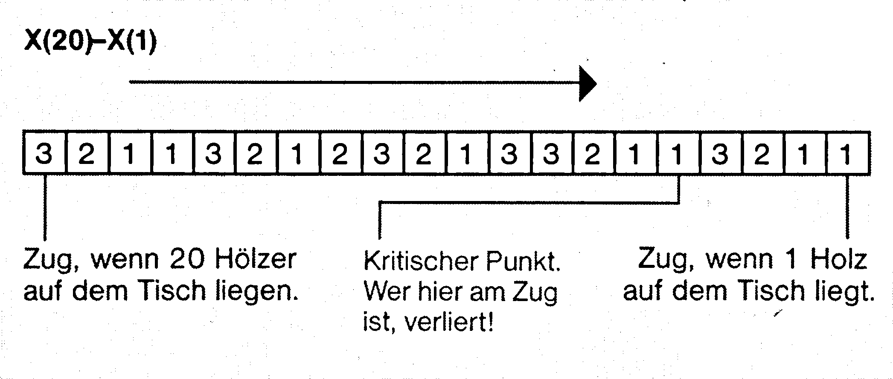
Bild 2 zeigt, auf welche 5 Punkte das Programm hinarbeitet, um den Spieler verlieren zu lassen. Aus Bild 2 geht auch hervor, daß der Spieler keine Gewinnchance hat, wenn er das Programm anfangen läßt. Liegen 20 Hölzer auf dem Tisch und das Programm beginnt, so nimmt es gleich 3 Hölzer weg. Der Spieler ist also erst beim ersten kritischen Punkt dran. Egal, was er macht, beim nachfolgenden Zug bringt ihn das Programm zum nächsten kritischen Punkt. Dies spielt sich solange ab, bis der Spieler beim letzten kritischen Punkt angelangt ist und somit verloren hat.
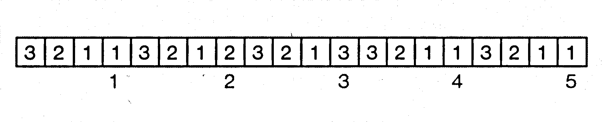
Es gibt für den Spieler also nur eine einzige Gewinnchance: Er muß dafür sorgen, daß das Programm immer bei den kritischen Punkten am Zug ist. Bei Bild 2 ist noch etwas anderes auffällig: Alle kritischen Punkte haben von ihren benachbarten kritischen Punkten den gleichen Abstand! Nehmen wir einmal an, der Spieler beginnt und nimmt sofort 3 Hölzer weg. Das Programm landet so beim ersten kritischen Punkt und nimmt aus Verlegenheit ein Holz weg. Um das Programm zum nächsten kritischen Punkt zu bringen, muß der Spieler jetzt 3 Hölzer wegnehmen. Er muß also viel, viel Glück haben, wenn er gewinnen will.
Die Gewinn-Reihenfolge lautet: 3, 3, 2, 1, 3.
Dieses KI-Programm ist so primitiv, daß es auf jedem programmierbaren Taschenrechner, ja sogar mit drei Lämpchen, ein paar Drähten, Batterie und Schrauben verwirklicht werden kann (ist eine nette Geschenkidee!).
Ich hoffe, daß es mir anhand dieses Spiels gelungen ist, Ihnen schon etwas klarzumachen, wie man beim Programmieren von KI-Problemen vorgehen muß. Die Vorgehensweise sieht in etwa so aus:
- Einfach mal mit dem Problem herumspielen, herumprobieren. Also ausprobieren: WAS PASSIERT WENN...
- Ausprobieren, ob irgendwo logische Abläufe vorhanden sind (Bei unserem Beispiel: Logisch, daß man von 4 Hölzern auf dem Tisch 3 wegnehmen muß, wenn man am Zug ist und gewinnen will).
- Versuchen, einfache Regeln aufzustellen.
- Ein Gesamtkonzept entwickeln.
- Skizzieren, Ablaufpläne erstellen.
- Programmieren.
Sie sehen schon: Dem eigentlichen Programmieren der Lösung gehen zahlreiche Einzelschritte voran.
Die Gültigkeit dieser fünf Grundregeln kommt auch im folgenden Kapitel voll und ganz zur Geltung – beim Programmieren von Software-Mäusen, die sich in einem Labyrinth zurechtfinden lernen.
Irrgärten und Mäuse – Grundlagen des »Backtracking«
Ein weiteres interessantes Gebiet, das uns noch tiefer in die Grundlagen der Künstlichen Intelligenz einführen wird, ist das Programmieren von »Mäusen«, die den Weg durch ein Labyrinth finden können – also KI-Programme, die Irrgärten »knacken« können. In den USA und in Japan werden zu diesem Thema regelrechte Wettkämpfe ausgetragen. Es geht darum, einen kleinen Roboter so zu konstruieren und programmieren, daß er möglichst schnell den Weg durch ein Labyrinth finden kann. Die Robotermäuse sind hierbei regelrechte Mini-Wunderwerke, zusammengebaut aus Motoren, Zahnrädern, Sensoren und natürlich vollgepackt mit Elektronik und einem Mikroprozessor. Wir wollen uns in diesem Kurs natürlich nicht mit Grundlagen der Mechanik zum Bau einer solchen Robotermaus vertraut machen (was unheimlich viel Geschick erfordert), sondern vielmehr ein Steuerprogramm für so eine Maus entwickeln.
Betrachten Sie bitte einmal das Labyrinth in Bild 3:
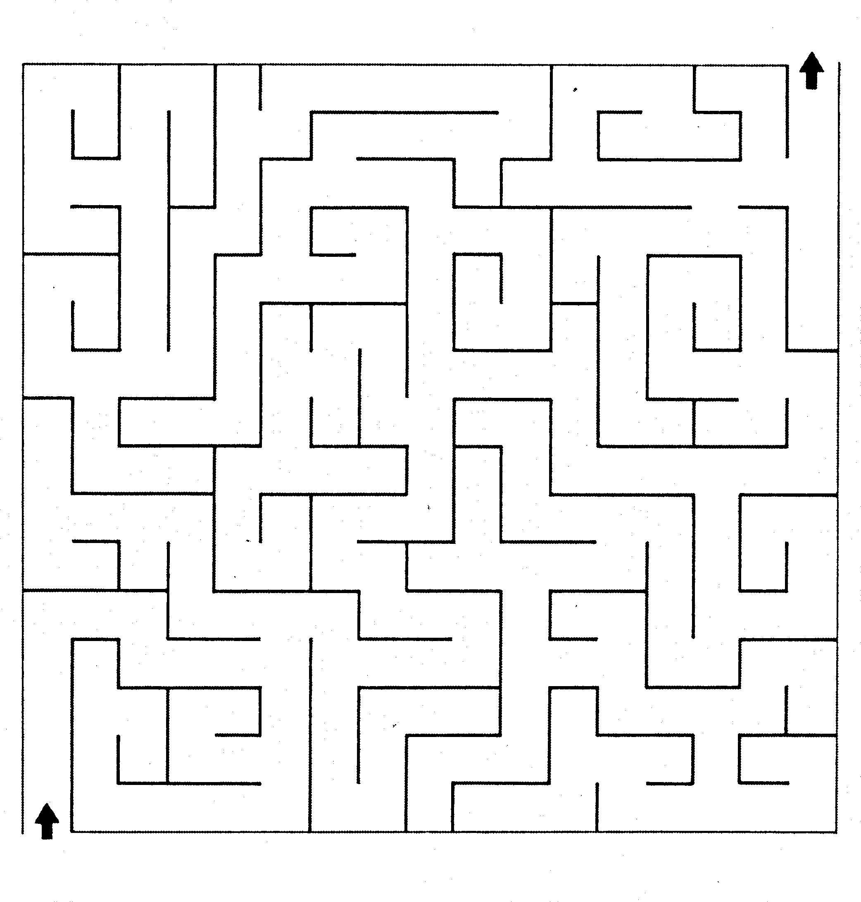
Als simpel oder primitiv kann man dieses Labyrinth mit Sicherheit nicht bewerten, denn man sieht auf den ersten Blick lediglich Eingang (Pfeil Ecke links unten) und Ausgang (Pfeil Ecke rechts oben), jedoch keine direkte Verbindung zwischen den beiden. Wir wollen an dieser Stelle einmal versuchen zu analysieren, wie ein Mensch vorgeht, wenn er den Weg durch dieses Labyrinth finden will. Zunächst einmal sieht man, wie bereits gesagt, auf einen Blick Eingang und Ausgang des Irrgartens. Kaum jemand wird jetzt versuchen, eine bestimmte Taktik des Vorgehens zu entwickeln – vielmehr tritt sofort das menschliche Auge in Kraft. Es versucht zunächst, eine möglichst direkte Verbindungslinie zwischen Eingang und Ausgang zu finden. In Sekundenschnelle stellt es dabei fest, daß ein direkter Weg nicht existiert – unter »direktem Weg« verstehe ich einen Weg, der nur sehr wenige Verzweigungen hat. Aus menschlicher Sicht ist für diesen Vorgang kein lobenswerter Denkprozeß, keine Intelligenz notwendig. Der nächste Schritt ist schon etwas komplizierter. Wer zum allererstenmal mit einem solchen Irrgarten konfrontiert wird – zum Beispiel kleine Kinder – versucht nun vom Eingang ausgehend verschiedene Wege – meistens in Richtung Ausgang orientiert – anzusteuern. Man bedient sich hierbei Hilfsmittel wie dem Zeigefinger oder einem Stift zum Entlangfahren des gegangenen Weges.
Der versierte Irrgarten-Freak geht jedoch sicherlich anders vor. Aus seiner Erfahrung mit früheren Irrgärten hat er gelernt, daß Irrgartenkonstrukteure meistens einen sehr indirekten Weg vom Eingang zum Ausgang wählen (also möglichst viele Verzweigungen), um den Irrgarten möglichst kompliziert zu machen. Der Erfahrene wird mit Sicherheit auch nicht jeden erdenklichen Weg bis zum Ende ausprobieren. Er sieht gleich, wo Sackgassen-Gebiete sind, und geht erst gar nicht in diese hinein. Ein Sackgassengebiet ist ein Gebiet des Irrgartens, wo sich ein Weg in verschiedene Richtungen aufteilt, die jedoch alle in Sackgassen enden. Ein ganz deutliches Sackgassengebiet befindet sich in unserem Labyrinth in der linken unteren Ecke, gleich neben dem Eingang.
Sicherlich haben Sie an dieser Stelle bereits bemerkt, daß ich auf die Irrgärten und Mäuse besonders genau eingehen möchte. Dies hat seinen Grund, denn an diesem Beispiel läßt sich sehr gut demonstrieren, wie man vorgehen muß, wenn man intelligente Abläufe programmieren will.
Beim Programmieren von Action-Spielen und auch Adventures muß man sich oft keine allzu großen Grundgedanken machen. Natürlich ist es oft schwer, Ideen programmtechnisch umzusetzen (sei es das Programmieren von schnell bewegter Grafik oder auch Parser für Adventures), man hat jedoch gewisse Regeln, nach denen man sich richten oder an denen man festhalten kann. Bei KI-Programmierung ist dies anders: Die KI steckt noch in ihren Kinderschuhen und wird es höchstwahrscheinlich auch bleiben, solange der Mensch nicht eine Frage geklärt hat. Die Frage, was Intelligenz eigentlich ist, wann ein bestimmer Prozeß als intelligent bezeichnet werden kann und wann nicht. Man denke hierbei zum Beispiel an jemanden, der sich mit Hintergedanken, also mit Absicht dumm stellt, weil er glaubt, damit etwas besser erreichen zu können. Man stellt sich zum Beispiel dumm, weil man zu faul ist, etwas lang und breit zu erklären (zum Beispiel Grundlagen der KI....). Was ich sagen will ist, daß sich aus dem Verhalten eines Menschen heraus nie beurteilen läßt, ob eine Tat nun auf mangelnder Intelligenz oder auf bewußter Simulation von mangelnder Intelligenz beruht. Ich werde mich deshalb auch hüten, an dieser Stelle zu erörtern, wieviel beziehungsweise ob überhaupt Intelligenz zum Knacken von Labyrinthen erforderlich ist. Wir wollen deshalb nun vielmehr versuchen, herauszufinden, wie man ein Programm, das sich in Irrgärten zurechtfindet, programmiert und danach Analogien zum menschlichen Vorgehen suchen.
Ein Profi im Labyrinth
Wie wir festgestellt haben, beruht die menschliche Vorgehensweise hauptsächlich auf visueller Basis, dem Durchchecken des Irrgartens mittels des Auges. Dies ist einfach, da wir das gesamte Labyrinth mit allen Wegen auf einmal überblicken können. Was wird jedoch, wenn wir es mit einem riesigen Labyrinth zu tun bekommen – zum Beispiel auf einer mehrere Quadratmeter umfassenden Papierfläche? Hier ist unsere »Optik« schnell überlastet. Völlig unbrauchbar wird die visuelle Methode schließlich, wenn wir uns vorstellen, daß es sich bei dem Irrgarten um einen unterirdischen, unbeleuchteten Komplex handelt, in dem wir uns direkt befinden. Um dann den Ausgang zu finden, braucht man eine gute Orientierungsfähigkeit (Intelligenz???) und eine große Portion Glück.
In dieser Situation können wir uns eine Robotermaus vorstellen. Sie befindet sich direkt im Irrgarten, hat keinen Gesamtüberblick, ja, weiß nicht einmal, in welcher Richtung sich der Ausgang befindet.
Was die visuelle Basis anbelangt, so wird der Mensch einem Homecomputer mit 64 KByte wie dem C 64 immer überlegen sein. Wenn es jedoch um Orientierungsfähigkeit im Dunkeln geht wie zum Beispiel in Irrgärten, die man nicht auf einmal überblicken kann (weil man sich zum Beispiel selbst in ihnen befindet), ist uns unser C 64 bei geschickter Programmierung bei weitem überlegen, da er Tausende von Schritten speichern kann, also eine Karte vom Irrgarten in seinem »Gedächtnis« mitschreibt. Der Mensch hingegen verliert je nach persönlicher Fähigkeit bereits nach (im Verhältnis zum Computer betrachtet) wenigen Abzweigungen die Orientierung.
Oder vielleicht doch nicht?
Immer an der Wand lang
Im folgenden wollen wir ein einfaches Labyrinth betrachten – die Theorie läßt sich jedoch auch auf jegliche anderen Labyrinthe übertragen.
Das folgende »Schema« zeigt, wie man auch im Dunkeln, allein durch Tastsinn, todsicher aus jedem auch noch so komplexen Labyrinth herausfinden kann. Bei allen Experimenten setzen wir selbstverständlich logisch aufgebaute Labyrinthe voraus, das heißt, geht man von Ort A in nördliche Richtung, um zu Punkt B zu gelangen, so gelangt man von B zurück zu A, indem man sich nach Süden bewegt. Bei Labyrinthen in Adventures (besonders ZORK I) ist dies oft nicht der Fall!
Das Prinzip ist ganz einfach. Angenommen, wir betreten einen stockdunklen Irrgarten. Wir berühren sofort beim Eintreten mit der linken Hand die linke Wand und lassen diesen Kontakt für die gesamte Zeit, die wir uns im Labyrinth aufhalten, nicht abbrechen. Das heißt, wir laufen immer vorwärts, also nie zurück in die Richtung, aus der wir kommen und schleifen beim Vorwärtsgehen unsere linke Hand die Wand entlang. Vorwärtsgehen kann natürlich auch um die Ecke gehen bedeuten. Wichtig ist nur, daß die linke Hand nie den Kontakt mit der Wand verliert.
Wenn Sie das Bild 4 betrachten und einmal mit Ihrem linken Zeigefinger (stellvertretend für die linke Hand) die rote Linie (in Pfeilrichtung) vom Eingang zum Ausgang entlangfahren, werden Sie das Prinzip verstehen.
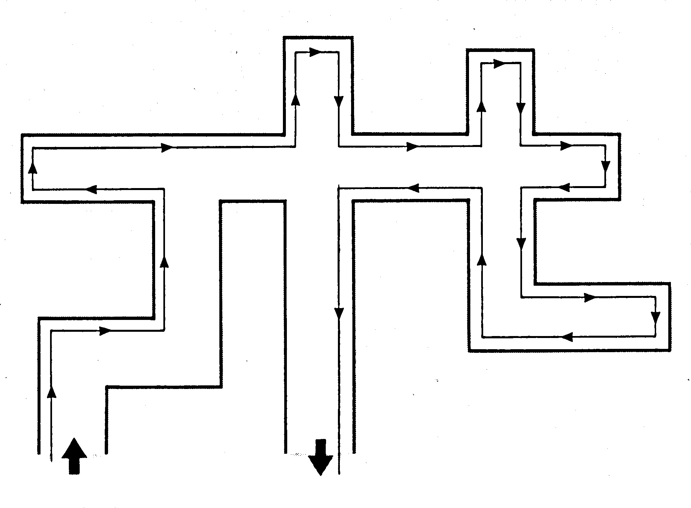
Hat man erstmal durchgeblickt, ist die Methode sonnenklar und absolut logisch, ja, sogar primitiv – aber draufkommen muß man halt erst einmal. Trotzdem ist es fantastisch, wie einfach man einen irrsinnig komplexen Irrgarten unter Verwendung einer solch einfachen Regel knacken kann. Wer noch mißtrauisch ist (und das sollten Sie bei KI-Programmen immer sein!), kann unser Lösungsprinzip einmal auf den großen Irrgarten (Bild 1) anwenden – es funktioniert garantiert! Wie jede Medaille ihre Kehrseite hat, so hat jedoch auch unsere Methode ihre Haken. Sie ist zum Beispiel nur auf zweidimensionale Irrgärten anwendbar, das heißt, bei Irrgärten, in denen es auch auf und ab geht (zum Beispiel mit Treppen und Leitern), sind wir aufgeschmissen. Auch bei unlogischen Irrgärten, bei denen Richtungsänderungen irreversibel sind, kommen wir nicht sehr weit. Sie können nun einwerfen, daß es beim Irrgarten (Bild 4) viel schneller gehen würde, wenn man sich an der rechten Wand (Hand) orientieren würde. Das stimmt, aber auch hier haben Sie wieder Gebrauch von der visuellen Methode gemacht – und die gilt nicht. Im Prinzip ist es jedoch vollkommen egal, ob wir uns für rechts oder links entscheiden. Wichtig ist nur, daß man seine Entscheidung beim Laufen im Irrgarten immer beibehält. Interessant ist auch die folgende Tatsache: Linker und rechter Lösungsweg schneiden sich nie! – Ausprobieren!
Allerdings hat unsere Methode auch noch einen anderen Nachteil – man lernt nichts daraus. Das heißt, wenn man den Irrgarten ein zweites, drittes oder gar noch öfteres Mal durchläuft, braucht man immer die gleiche Zeit dazu (vorausgesetzt, man bewegt sich immer mit der gleichen Geschwindigkeit vorwärts). Günstiger wäre es, wenn man sich alle Sackgassen im Gedächtnis speichern würde und bei späteren Versuchen erst gar nicht mehr in diese hineinlaufen müßte – dieses »Speichern« ist bei unserer jetzigen Methode nicht möglich. Probieren Sie doch einmal beide Methoden im Irrgarten (Bild 1) aus, die links- oder die rechtsorientierte und die visuelle (die Speichermethode). Sie werden schnell merken, wie Sie bei mehrmaligem Durchwandern des Labyrinths mit der visuellen Methode immer mehr von Ihrem Erfahrungs-Speicher (Intelligenz???) Gebrauch machen werden. Mit der Zeit weiß man halt einfach immer besser, wann etwa man sich links orientieren muß, wann in Richtung Norden, wo man schon einmal eine falsche Richtung eingeschlagen hat (und dies deshalb nun meidet), und findet sich so immer besser zurecht. Nach einiger Zeit kennt man sich schließlich aus – man gelangt, ohne sich zu verirren, vom Eingang zum Ausgang.
Schön und gut, Sie wissen jetzt eine Formel, mit der man sicher aus jedem zweidimensionalen, logisch aufgebauten Labyrinth herausfindet. Wie setzt man eine Lösungsmethode dieser Art jedoch zum Programm um?
Ich möchte Ihnen im folgenden ein Programm vorstellen, das folgende Kriterien erfüllt:
— Der Irrgarten muß nicht im Speicher des C 64 stehen. Das Programm ist in der Lage, jeden zweidimensionalen Irrgarten (mögliche Richtungen: N, S, O, W) mit beliebiger Größe, der in einer Form wie Bild 1 vorliegt, zu knacken.
— Das Programm fragt den »Spieler«, ob bestimmte Richtungen möglich sind. Es erwartet sodann immer eine Antwort in der Form JA oder NEIN. Man muß dem Programm mitteilen, wenn es den Ausgang gefunden hat.
— Das Programm bemerkt es, wenn man versucht, es mit falschen Antworten oder Irrgärten ohne Ausweg zu »leimen«.
— Das Programm merkt sich den richtigen Weg und findet beim zweiten Anlauf den Weg ohne jegliches Verirren.
Rekursive Unterprogramme
Gerade das letzte Kriterium macht uns schwer zu schaffen, da es unser bisheriges Lösungskonzept völlig über den Haufen wirft.
Es muß also ein Neues her (das vom Aufbauprinzip her jedoch gar nicht so verschieden von unserer ersten Methode sein wird).
Die meisten Maus-Programme basieren auf einem Konzept, das die folgende Programmiertechnik erforderlich macht:
Rekursive Unterprogramme sind Unterprogramme oder auch Prozeduren, die sich selbst aufrufen. In höheren Programmiersprachen wie zum Beispiel LISP lassen sich rekursive Vorgänge relativ leicht programmieren. Basic ist hierzu nicht sehr geeignet. Das folgende Beispiel demonstriert auf einfache Art und Weise, wie rekursive Unterprogramme funktionieren:
10 REM REKURSIVES UP - DEMO
20 GOSUB1000:REM REKURSIVES UP AUFRUFEN
1000 REM REKURSIVES UNTERPROGRAMM
1010 :
1020 GOSUB1000:REM SELBSTAUFRUF
1030 :
1040 RETURN
Die Dokumentation hierzu ist kurz und einfach:
In Zeile 10 wird ein Unterprogramm aufgerufen, das in den Zeilen 1000 – 1040 steht. In Zeile 1020 – also innerhalb des Unterprogrammes – ruft es sich selbst auf.
Was wird wohl passieren, wenn wir dieses kurze Programm starten (was Sie ja eh schon getan haben, ohne auf meine Erklärung zu warten)?
Es kommt zu einem
OUT OF MEMORY ERROR IN 1020.
Mißrauisch, wie wir sind, geben wir nun
PRINT FRE(0)+65000 ein.
Dabei kommt heraus, daß 38323 Byte RAM frei sind. Wie kommt es denn dann zum OUT OF MEMORY ERROR, werden Sie sich nun sicher fragen.
Ganz einfach. Der C 64 kann nur eine begrenzte Anzahl von Unterprogrammen nach dem Stapelprinzip (als letztes rein, als erstes raus) verwalten und aufrufen.
Ändern Sie bitte Zeile 101 so ab:
1010 I=I+1.
Wenn Sie nun das Programm starten und nach seinem Abbruch den Wert I im Direktmodus abfragen, erhalten Sie den Wert 23. Das heißt, der C 64 ist in der Lage, maximal 23 Unterprogrammaufrufe zu speichern (die Rücksprungadressen). In anderen Worten läßt sich das Stapel-Prinzip so ausdrücken: Der C 64 findet eine GOSUB-Anweisung. Er nimmt sich nun einen Notizzettel und schreibt auf diesen die Zeile, in der die GOSUB-Anweisung erfolgt ist. Er merkt sich also, wo er weitermachen muß, wenn das Unterprogramm mit RETURN beendet wird. In dem eben notierten Unterprogramm kommt nun plötzlich wieder eine GOSUB-Anweisung vor. Es ist dabei völlig egal, ob ein anderes Unterprogramm aufgerufen wird oder ob sich das Unterprogramm rekursiv selbst aufruft wie in unserem Beispiel. Wieder nimmt der C 64 sich einen Zettel und notiert, wo es weitergeht, wenn dieses Unterprogramm mit RETURN beendet wird. Diesen Notizzettel legt der C 64 nun oben auf den ersten Notizzettel. Jetzt taucht im Programm eine RETURN-Anweisung auf. Woher soll der C 64 nun wissen, wohin er springen muß? Nun, er nimmt einfach den obersten Zettel vom Notizstapel weg (daher der Name Stapel-Prinzip). Auf diesem Zettel steht, wohin er zurückspringen muß. Nach dem Sprung wirft der C 64 den vom Stapel genommenen Notizzettel in den Papierkorb. Bei der nachfolgenden RETURN-Anweisung wird der nächste oberste Zettel vom Stapel genommen, dann der nächste und so weiter. Wenn eine RETURN-Anweisung kommt und der C 64 findet auf seinem »Schreibtisch« keinen Notizzettel, so meldet er sich empört mit RETURN WITHOUT GOSUB ERROR. Versucht man hingegen, ein 24. Unterprogramm aufzurufen, so meldet er sich mit OUT OF MEMORY ERROR IN. Auf seinem Schreibtisch ist leider nur Platz für maximal 23 Notizzettel. Der OUT OF MEMORY ERROR heißt praktisch nichts anderes als »Ich habe keinen Platz mehr für weitere Zettel auf meinem Schreibtisch«.
Der rekursiven Programmierung mittels GOSUB sind also enge Grenzen gesetzt.
Im Listing 2 finden Sie ein Maus-Programm, das auf solch rekursiven Unterprogrammen beruht:
Diese Maus funktioniert auf der Basis unserer »Immer-an-der-Wand-lang«-Methode«. Der Programmablauf ist äußerst einfach: Die Maus fragt einfach, ob sie nach links gehen kann. Ist dies der Fall, so speichert sie den ersten Zug und fragt, ob der Ausgang gefunden ist. Ist links nicht möglich, so versucht die Maus geradeaus zu gehen. Geht dies auch nicht, so versucht sie es mit rechts. Funktionieren alle drei Richtungen nicht (zum Beispiel, wenn wir die Maus beschummeln), stellt sie dies in Zeile 1110 fest und gibt die Suche auf. Die merkwürdige Abfrage mag zunächst verblüffend sein. Um die Maus zum Beispiel durch den Irrgarten in Bild 1 zu schicken, ist folgende Befehlsfolge notwendig:
geradeaus-rechts-geradeaus-links-rechts-rechts-links etc.
Bei der Eingabe ist zu beachten, daß sich Links-Rechts-Angaben nicht auf ihre Position (Spieler), sondern aus der Sicht der Maus und ihrer momentanen Bewegungsrichtung bezogen werden muß. Unsere Maus ist allerdings zu schwach für den Irrgarten in Bild 1. Irrgarten 1 erfordert nämlich 22 Richtungsänderungen bis zum Ausgang. Aufgrund der rekursiven GOSUB-Programmierung kann die Maus jedoch nur maximal 20 Schritte speichern (eigentlich 24, aber man soll sich immer etwas »Spielraum« lassen – deshalb Einschränkung auf 20).
Grundlagen des Backtracking
Wer glaubt, daß es auch ganz ohne Rekursives geht, hat recht:
Zu dem Programm in Listing 3 habe ich nichts zu sagen. Sie sehen es sicher selbst. Aus der Links-Rechts-Methode läßt sich einfach nichts herausholen, was auch nur im entferntesten mit KI zu tun hat.
Backtracking – diese Bezeichnung trifft bei Programmen zu, die verschiedene Lösungen ausprobieren und einen Lösungsweg, der nicht zum Ziel führt, »rückwärts« wieder verlassen können, um eine andere Lösungsalternative auszuprobieren.
Unsere nächste Maus soll nach solch einem Backtracking-Verfahren arbeiten. Machen wir uns einmal ein paar Gedanken über unser neues Programm.
Nehmen wir einmal an, die Maus arbeitet ähnlich wie wir, wenn wir ein Adventure spielen. Sie zeichnet sich eine Karte des Irrgartens. Bei jedem Schritt, den die Maus tiefer in das Labyrinth vordringt, wird diese Karte größer. Anhand der Karte kann die Maus jederzeit feststellen, wo sie schon war, welchen Weg sie bisher gegangen ist.
Hier noch einmal eine kleine Definition in bezug auf zweidimensionale, logische Labyrinthe:
Bei jedem Irrgarten kann man den Ausgang mit dem Eingang durch den absoluten Lösungsweg verbinden. Der Lösungsweg ist also der einzige, kürzeste Weg, der notwendig ist, um vom Eingang zum Ausgang zu gelangen.
Alle anderen Wege (eventuelle Verzweigungen des Lösungswegs) enden mehr oder weniger in Sackgassen. Unsere Maus betritt den Eingang und geht bis zur ersten »Kreuzung«. Der Weg vom Eingang bis zur ersten Kreuzung ist mit absoluter Sicherheit ein Teilstück des Lösungsweges. Kommt die Maus an der ersten Kreuzung an, gibt es folglich nur zwei Möglichkeiten:
a. Sie schlägt einen neuen Weg ein, der wiederum einen Abschnitt des Lösungsweges repräsentiert. Sie bleibt also auf dem richtigen Weg.
b. Die Maus kommt vom einzig richtigen Lösungsweg ab und gerät in eine Sackgasse oder sogar in ein Sackgassengebiet. Dieser Fall tritt mit Sicherheit häufiger als Fall a ein.
Wir wollen der Einfachheit halber zunächst einmal folgendes festlegen: Jeder Weg, der vom Lösungsweg wegführt, endet früher oder später in einer absoluten Sackgasse, aus der nur ein einziger Weg hinausführt: der Weg, durch den man in sie geraten ist (zum Beispiel ein langer Korridor, der plötzlich endet).
Unsere Maus erhält von uns einen Radiergummi. Mit ihm kann sie alle Wege, die sie bereits in ihre Karte gezeichnet hat und die als absolute Sackgasse enden, wieder herausradieren. Die Karte, die dann letztendlich übrigbleibt, stellt nur noch den absoluten Lösungsweg dar. Dieses Herausradieren, also das Widerrufen bereits gefällter Entscheidungen, die sich als falsch erwiesen haben – das Löschen falscher oder unbrauchbarer Notizen –bezeichnet man als den eigentlichen Backtracking-Vorgang. Das folgende Schema zeigt den Irrgarten, bei dem alle falschen Wege wegradiert wurden. Der Weg, der noch vorhanden ist, ist der absolute Lösungsweg (Bild 5).
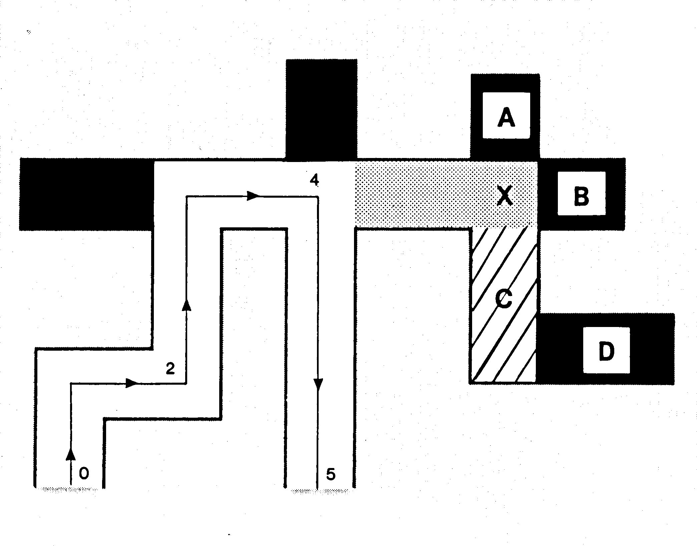
Bild 5 zeigt den Irrgarten von Bild 1, nachdem er von unserer nächsten Maus durchwandert worden ist.
Das heißt, alles, was vom Irrgarten noch übriggeblieben ist, ist der absolute Lösungsweg (auch durch Pfeil deutlich gemacht). Der restliche Teil des Irrgartens ist entfernt worden: Die schwarz ausgemalten Wege sind von der Maus als absolute Sackgassen analysiert worden. Nachdem die Maus einen solchen Weg durch die einzig mögliche Richtung wieder verlassen hat, entfernt sie ihn sofort für immer aus ihrem Gedächtnis. Im Labyrinth sind jedoch noch zwei andere ausgemalte Flächen zu sehen: eine gelbe und eine rote. Für die folgenden Überlegungen wollen wir uns auf die Wegabschnitte X, A, B, C und D beziehen.
Nehmen wir einmal an, unsere Maus steht an der Stelle X. Sie befindet sich also im rot ausgemalten Wegteil. Wenn wir einmal von der Richtung absehen, aus der sie gerade gekommen ist, hat die Maus nun drei Möglichkeiten. Sie kann zu A, B oder C gehen. Unsere Maus entscheidet sich zunächst für A. Leider erweist sich A als absolute Sackgasse. Die Maus geht also zurück zu X und vergißt A (wird schwarz ausgemalt). Nun versucht die Maus es bei B. Wieder Pech. Also zurück zu X und B vergessen. Nun geht die Maus nach C. Sie weiß an dieser Stelle noch nicht, daß auch dieser Wegabschnitt nach der nächsten Abbiegung in einer Sackgasse enden wird. Von C aus hat die Maus zwei Möglichkeiten: Sie kann nach X und nach D gehen. Unsere Maus ist jedoch so programmiert, daß sie nur und wirklich nur dann zurück zu dem Punkt geht, aus dem sie gerade kommt, wenn dies die einzige Möglichkeit ist. Sie hat also das Bestreben, immer tiefer in das Labyrinth vorzudringen. Sie zieht stets die unbekannten Wegabschnitte den bereits begangenen vor.
Die Programmierung der dritten Maus
Diese Regel zwingt die Maus also nun dazu, nach Punkt D zu gehen. In Punkt D stellt sie jedoch wieder fest, daß sie in einer absoluten Sackgasse gelandet ist. Sie geht somit die einzig mögliche Richtung zurück (zurück zu C) und vergißt Wegabschnitt D. Durch das Eliminieren des Wegteils D ist nun auch C zur absoluten Sackgasse geworden. Die Maus wählt wieder die einzig mögliche Richtung, geht nach X und eliminiert Wegteil C. Dadurch, daß die Wegteile A, B, C eliminiert worden sind, ist nun auch Teil X zur absoluten Sackgasse geworden. Die Maus nimmt also die einzige Richtung ein, die von X aus noch möglich ist. Sie landet dadurch wieder auf dem richtigen Lösungsweg. Sie sehen also, wie unsere Maus arbeitet, wenn sie in einer Sackgasse gelandet ist. Aber wie setzt man dieses Wissen über Mäuse in ein Programm um? Wie uns bereits klar ist, braucht unsere neue Maus ein Gedächtnis, mit dem sie sich merken kann, wo sie bereits war – somit also letztendlich den absoluten Lösungsweg. Dieses Gedächtnis muß flexibel sein. Das heißt, es muß sowohl speichern als auch vergessen können. Zunächst erweitert unsere Maus ihr Gedächtnis mit jedem Schritt vorwärts. Gerät sie jedoch in eine Sackgasse, so muß sie einen Schritt rückwärts machen und somit bereits Gelerntes, das sich als falsch, nämlich als Sackgasse erwiesen hat, wieder vergessen. Solch ein flexibles Gedächtnis wird in unseren Mausprogrammen stets mittels eines dimensionierten Feldes realisiert.
Wie muß dieses Feld aussehen?
Wir haben definiert, daß die Irrgärten, in denen sich unsere Maus zurechtfinden wird, zweidimensional logisch aufgebaut sein müssen. Es gibt in jedem Raum genau vier mögliche Richtungen: N, S, O und W. Im Prinzip könnten wir auch Richtungen wie NW, SW, NO und SO erlauben. Wichtig ist nur, daß alle Richtungen in der gleichen Ebene verlaufen. Der Einfachheit halber beschränken wir uns jedoch auf die vier Grundhimmelsrichtungen. Was liegt nun näher, als eine Tabelle anzulegen, die zu jedem Raum die möglichen Richtungen speichert.
Dieses Gedächtnis sieht dann aus wie Tabelle 1. Die Tabelle 1 ist wie folgt zu interpretieren:
| RAUM | N | S | O | W |
|---|---|---|---|---|
| 0 | 1 | – | 2 | – |
| 1 | – | 0 | – | – |
| 2 | – | 3 | – | 0 |
| 3 | 2 | – | – | – |
Wenn man von Raum 0 aus nach Norden geht, gelangt man zu Raum 1. Geht man nach Osten, so gelangt man zu Raum 2 und so weiter.
Hoppla, ist das nicht etwa eine Landkarte, wie man sie zur Programmierung von Abenteuerspielen benötigt?
Richtig. Dies ist genau die Methode, die ich im ersten Adventure-Programmierkurs zum Definieren der einzelnen Räume eines Spiels festgelegt habe (wer will, kann sie in Sonderheft 2/85 nachlesen!).
Für das »Gedächtnis« unserer Maus legen wir folgendes fest:
- Zu Beginn des Programmes erhält jedes Element der Tabelle den Wert 1. Das heißt, jede Möglichkeit, die die Maus noch nicht ausprobiert hat, hat den Wert 1.
- Will die Maus in eine Richtung gehen, die nicht möglich ist, so erhält die entsprechende Stelle den Wert 2. Sackgassen kennzeichnen sich also durch dreimaliges Vorkommen einer 2 in ihrer »Zeile«.
- Ist eine Richtung möglich, so wird in die entsprechende Tabellenstelle die Nummer des Raumes geschrieben, zu dem diese Richtung führt.
Je größer die Tabelle ist, umso größer ist die Gedächtnisleistung der Maus. 38 KByte Basic-RAM sind genug, um der Maus ein Gedächtnis für über 1000 Räume zur Verfügung zu stellen.
Natürlich benötigen wir auch noch einen Zeiger, der immer auf den Raum der Tabelle zeigt, in dem sich die Maus gerade befindet. Vielleicht finden Sie es noch verwirrend, wie man bei einem Labyrinth überhaupt von Räumen sprechen kann, beziehungsweise, was die Zeiger 1 und 2 sollen. Die folgenden Beispiele werden es Ihnen klarmachen:
In Bild 6 sind die ersten drei Schritte der Maus eingezeichnet. Die Maus beginnt ihre Suche immer in Raum 0, dem Labyrintheingang oder dem Ausgangspunkt, wenn die Maus inmitten eines Labyrinthes ausgesetzt wird. Die Maus läuft nun nach Norden zu Raum 1. Ein Raum kann also als Wegkreuzung angesehen werden. Wenn uns die Maus später fragt, ob sie nach Norden gehen kann, will sie nicht wissen, wie weit sie nach Norden gehen kann, sondern lediglich, ob sie bis zur nächsten Kreuzung in nördlicher Richtung gehen kann (dies schließt natürlich auch Sackgassen ein). Von Punkt 1 aus bieten sich der Maus vier Richtungen an. Süden scheidet für sie zunächst aus, da sie, wie wir bereits festgelegt haben, immer unerforschte Gebiete bevorzugt. Die Maus geht nach Norden weiter. Warum eigentlich gerade nach Norden? Ganz einfach. Die Maus geht nach einem festgelegten Schema vor – N, O, S, W. Das heißt, sie versucht immer zuerst nach Norden zu gehen. Gelingt dies nicht, so versucht sie es mit Osten, dann mit Süden und mit Westen.
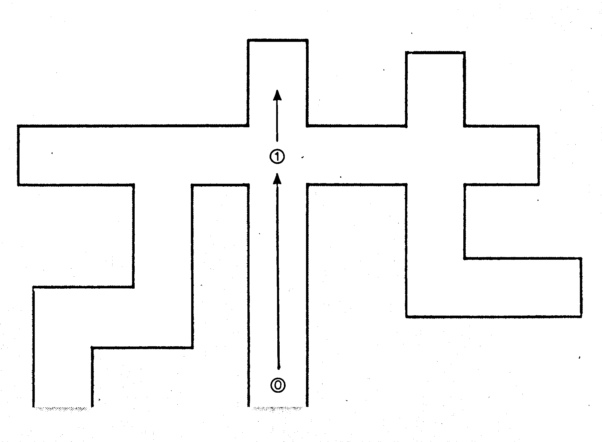
Entsprechend wird die endgültige Maustabelle auch definiert (Spartenreihenfolge: N-O-S-W). So gelangt die Maus schließlich zu Raum 2. Im Gedächtnis der Maus sieht es jetzt aus wie in Tabelle 2.
| RAUM | N | O | S | W | |
|---|---|---|---|---|---|
| Zeiger auf Maus-Position | 0 | 1 | -1 | -1 | -1 |
| 1 | 2 | -1 | 0 | -1 | |
| → | 2 | 1 |
| RAUM | N | O | S | W | |
|---|---|---|---|---|---|
| 0 | 1 | -1 | -1 | -1 | |
| 1 | 2 | -1 | 0 | -1 | |
| → | 2 | -2 | -2 | 1 | -2 |
Bisher hat die Maus noch nie eine negative Antwort auf einen Richtungsversuch bekommen. Daher enthält die Tabelle 2 keine 2-Elemente: Woher weiß die Maus eigentlich, daß man von Raum 1 mittels »Süden« nach Raum 0 gelangt – sie hat dies doch noch gar nicht ausprobiert!!!
Unsere Maus ist nicht dumm. Sie erlaubt sich einen kleinen Kunstgriff, der sich so formulieren läßt:
Regel 1
Gelange ich mittels Befehl X (»N«) von Raum A zu Raum B, so kann ich bei logischen Systemen (Labyrinthen) voraussetzen, daß ich durch den Gegenbefehl zu X (»S«) von Raum B zu Raum A gelange.
Die Maus macht also nicht nur zu den aktuellen Vorgängen in ihr Gedächtnis Einträge, sondern gleichzeitig auch zu dem Gegenvorgang. Deshalb hat sie in der Spalte S bei Raum 1 sofort eine 0 eingetragen, nachdem sie in der N-Spalte von 0 eine 1 eingetragen hat. Der Zeiger des Gedächtnisses steht auf Raum 2 – dort, wo sich die Maus gerade befindet.
Jetzt wird's spannend. Die Maus ist in einer Sackgasse gelandet. Dies ist der Anfang vom Backtracking-Verfahren. Die Maus versucht vergeblich, eine andere Richtung als die, die sie einen Schritt zurückwirft, zu finden, denn sie will ja immer vorwärts. Enttäuscht muß sie ihr Gedächtnis mit 2 füllen. Dies verdeutlicht Tabelle 4.
| RAUM | N | O | S | W | |
|---|---|---|---|---|---|
| 0 | 1 | -1 | -1 | -1 | |
| 1 | 2 | -1 | 0 | -1 | |
| → | 2 | -2 | -2 | 1 | -2 |
Gemäß unserer Definition sind Räume mit drei 2-Elementen in einer Zeile absolute Sackgassen.
Die Maus weiß das auch und entschließt sich zu einem Rückwärtsschritt. Dazu setzt sie den Zeiger auf ihr Gedächtnis um 1 zurück. Raum 2 muß nun eliminiert (schwarz ausgemalt) werden. Das heißt, alle Wege, die zu Raum 2 führen, müssen zerstört werden. Natürlich gibt es nur einen Weg zu Raum 2, da nur ein Weg aus einer Sackgasse herausführen kann. Die Maus weiß auch ganz genau, welcher Weg dies ist. Wir definieren:
Regel 2
Wenn ein Versuchsergebnis falsch ist, dann muß ich einen Schritt zurückgehen (Backtracking). Durch den Befehl X bin ich von A nach B (in eine Sackgasse) geraten. Ich muß also zurück zu A. Dies erreiche ich durch den Gegenbefehl von X. Wenn ich wissen will, durch welchen Befehl (Richtung) ich von A nach B gelangt bin, so muß ich den Gegenbefehl zum Gegenbefehl von X bilden (Regel 3). Diesen muß ich dann aus meinem Gedächtnis löschen, um nicht noch einmal zu diesem negativen Ergebnis zu gelangen.
Regel 3
Wenn man vom Gegenbefehl eines Befehls X wiederum den Gegenbefehl bildet, so erhält man wieder den ursprünglichen Befehl X (Analogie: Bilden von Kehrwerten).
Anhand dieser drei Regeln läßt sich nahezu jeder Backtracking-Vorgang (»Aus Irrtum lernen«) beschreiben.
Aus Regel 2 weiß die Maus, daß sie den Wert 2 in Raum 2, Spalte N auf 2 setzen muß. (Tabelle 4)
Nach dem Backtracking sieht es im Gedächtnis aus wie in Tabelle 5. Die Maus steht jetzt wieder in Raum 1. Das neue Irrgartenbild entspricht Bild 7.
| RAUM | N | O | S | W | |
|---|---|---|---|---|---|
| 0 | 1 | -1 | 1 | -1 | |
| → | 1 | -2 | -1 | 0 | -1 |
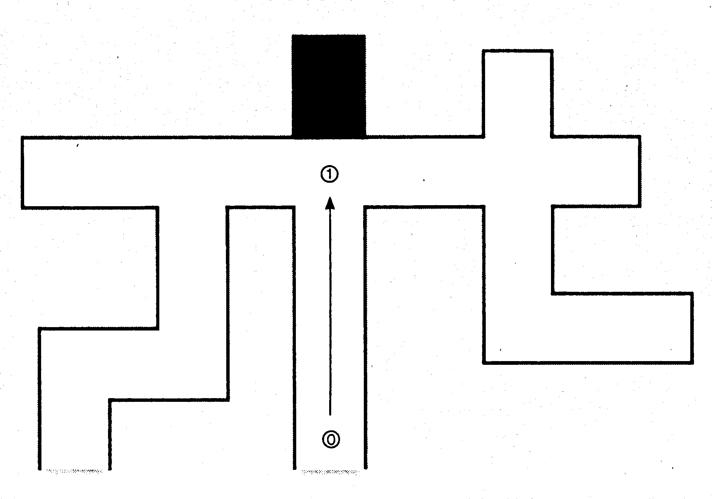
Wie macht die Maus nun weiter?
Nun, sie hat doch ihr N-O-S-W-Schema. Norden hat sie in Raum 1 schon ausprobiert. Also ist jetzt Osten dran. Stellt die Maus nach einem abgeschlossenen Backtracking fest, daß ihre jetzige Position wieder drei Zweien enthält, führt sie einen weiteren Backtracking aus (Vergleichen Sie das Beispiel in Bild 2, Raum X).
Sicher haben Sie bereits bemerkt, daß ich für die letzten Beispiele den Ausgang des Labyrinths als Eingang benutzt habe. Ich tat dies, um schneller in eine Sackgassensituation zu gelangen. Die Tabelle 6 zeigt, wie das Gedächtnis der Maus arbeitet, wenn die Maus vom Eingang links unten ausgehend (wie in Bild 1) ihren Weg zum Ausgang sucht (Bild 8). Das fertige Maus-Programm finden Sie in Listing 4.
| Der Lösungsweg: N-O-N-O-S |
||||
| RAUM | N | O | S | W |
|---|---|---|---|---|
| 0 | ① | |||
| 1 | -2 | ② | 0 | |
| 2 | ③ | 1 | ||
| 3 | -2 | ④ | 2 | |
| 4 | 5 | 5 | ⑤ | 3 |
| 5 | 2 | 2 | 4 | -2 |
| 5 | 6 | 6 | 6 | 4 |
| 6 | 2 | -2 | 5 | -2 |
| 6 | 2 | -2 | -2 | 5 |
| 6 | 5 | 7 | -2 | -2 |
| 7 | -2 | -2 | -2 | 6 |
| 5 | 4 | |||
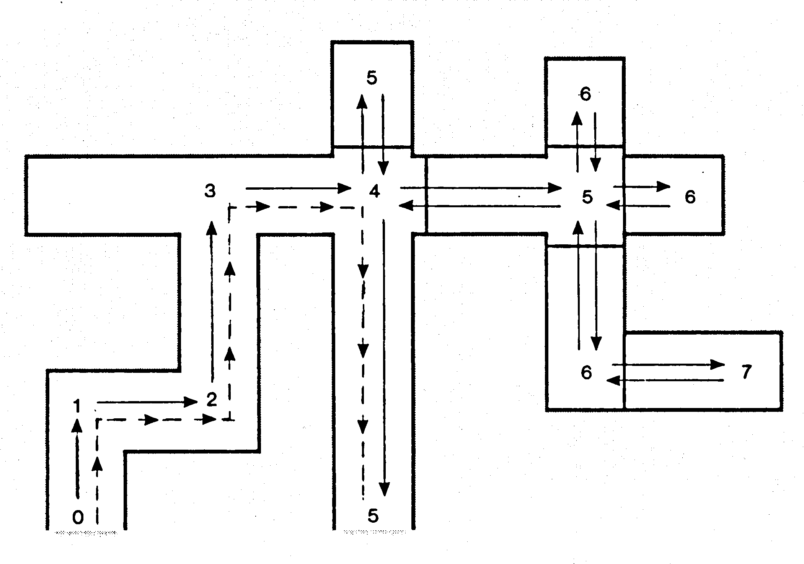
Dokumentation zum Listing 4
| Variablen | M%: | Größe des Gedächtnisses |
| M(M%,3): | Gedächtnis | |
| MZ: | Zeiger auf Gedächtnis | |
| X: | Befehl (N, S, O oder W) | |
| N = 0 | ||
| O = 1 | ||
| S = 2 | ||
| W = 3 |
Die restlichen Variablen sind lediglich Hilfsvariablen.
Unterprogramme:
| 5000 bis 5150 | Unterprogramm für Backtracking-Vorgang. |
| 5000 bis 5050 | Feststellen, ob die Maus sich in einer Sackgasse befindet. Schleife durchläuft M(MZ,0)-M(MZ,3), also den Standort der Maus – und zählt, wie oft der Wert 2 vorkommt. |
| 5100 | Beginn des Backtrackings. |
| 5110 | Letzter Schritt, der in die Sackgasse führte, wird zurückgenommen – der Gedächtniszeiger wird um 1 erniedrigt. |
| 5120 bis 5140 | Der falsche Schritt wird aus der Tabelle entfernt und mit dem Wert 1 gefüllt. Alle Verbindungswege zur Sackgasse (beziehungsweise der einzige Weg) werden gelöscht – auf 2 gesetzt. Durch Bilden des Gegenbefehls zu X erkennt die Maus, wie sie aus der Sackgasse entkommt und meldet sich in Zeile 5137 zu Wort. |
| 6000 bis 6080 | Unterprogramm zum Bilden des Gegenbefehls. Aus Norden wird Süden, aus Osten Westen und so weiter. |
| 10000 bis10099 | Unterprogramm zur Ausgabe des bisherigen Weges. Hier wird in einer Schleife das Gedächtnis von Raum 0 – MZ 1 durchlaufen. In jedem Raum sind allerdings immer zwei Richtungen gespeichert. Beide führen zu Abschnitten des Lösungsweges: die eine in Richtung Ausgang, die andere in Richtung Eingang. Durch die IF-THEN-Abfrage in Zeile 10045 wird erreicht, daß nur der vorwärtsbringende Befehl (also Richtung Ausgang) ausgegeben wird. |
| 5 bis 30 | Vorbereitungen zum Programmablauf. |
| 40 bis 48 | Schleife zum Löschen des Gedächtnisses. |
| 100 bis 160 | Hier wird die Eingabe der Ausgangsrichtung gefordert (siehe Erklärung zum Ablauf). |
| 1000 bis 1210 | Steuerprogramm der Maus. |
| 1110 | X=0. Das heißt, die Maus versucht als erste Richtung Norden. Ihr Schema lautet schließlich N-O-S-W. X kann bis zum Wert 3 (=Westen) erhöht werden. So werden alle möglichen Richtungen nacheinander ausprobiert. |
| 1125 | Hier fragt die Maus, ob die Richtung X möglich ist. Vorher prüft sie jedoch in Zeile 1120, ob sie diese Richtung in diesem Raum nicht schon einmal ausprobiert hat. Nur wenn an der entsprechenden Stelle im Gedächtnis eine 1 steht, versucht sie es mit X. Wenn X nicht geht, so wird eine 2 gemerkt. X wird um 1 erhöht und der nächste Versuch beginnt. Ist die Richtung möglich, so merkt sich die Maus diese (Zeile 1141) und bewegt sich in diese Richtung (Zeile 1142). In Zeile 1144 gibt die Maus auf, wenn ihr Gedächtnis voll ist – sie ist also schon M%-Schritte gegangen, die sich alle als richtig erwiesen haben. |
| 1146 bis 1152 | Hier wird der Gegenbefehl gebildet und im neuen Raum gespeichert. Dies ist nötig, um die Priorität von unerforschten Gebieten gegenüber bereits bekannten zu gewährleisten (Zeile 1210). |
Bedienungsanleitung zur dritten Maus
Nach dem Programmstart müssen Sie sich ein wenig gedulden, da die Maus erst ihr Gedächtnis löschen muß.
Dann werden Sie nach der Anfangsrichtung gefragt. Es ist die Richtung, die von Raum 0 (Eingang) zu Raum 1 führt. Dies ist notwendig, damit die Maus den Eingang niemals als Sackgasse interpretiert.
Sodann stellt die Maus Fragen, zum Beispiel:
»Kann ich nach Norden gehen?« Sie müssen dann »J« oder »N« antworten. Ab und zu gibt die Maus auch automatisch an, wohin sie will (um aus einer Sackgasse rauszukommen). Sie sagt dann zum Beispiel »Ich gehe nach Norden«. Durch Drücken der SPACE-Taste gibt die Maus ihren Gedächtnisstand aus – also den Weg, den sie bisher vom Eingang aus gegangen ist.
Unsere dritte Maus ist schon ziemlich schlau. Sie bemerkt es, wenn man sie beschummelt und hat auch mit dem Irrgarten von Bild 1 keinerlei Probleme. Allerdings ist ihr Gedächtnis auf 1000 Richtungen begrenzt, die sie sich merken kann.
Mit Hilfe einer relativen Datei kann dieses Gedächtnis auf bis zu 15000 Räume vergrößert werden. Sie können so eine Änderung mit ihrem bisher erworbenen Wissen leicht selbst vornehmen.
In diesem Kapitel haben Sie einige wichtige Grundlagen der Künstlichen Intelligenz kennengelernt. Ein entscheidender Faktor, der bei einem Lebewesen auf Intelligenz schließen läßt, ist das Erkennen von Fehlern und das Lernen aus Irrtümern. Ein weiterer entscheidender Faktor ist das Zurücknehmen einer Entscheidung, die sich als Fehler erwiesen hat – der Backtracking-Vorgang.
Als nächsten Kapitel schneiden wir erstmals ein ganz anderes Themengebiet der KI an: Programme, die einen menschlichen Gesprächspartner simulieren können. Zur Übung empfehle ich Ihnen an dieser Stelle jedoch erst einmal das Maus-Programm so zu verbessern, daß der Speicher der Maus als relative Datei angelegt wird. Mit Ihrem bisher erworbenen Wissen über Dateiverwaltung und relative Dateien dürfte dies nicht allzu schwierig sein.
Eliza
HI, I AM ELIZA TELL ME YOUR PROBLEM
> I HATE SCHOOL
SAY, DO YOU HAVE ANY PSYCHOLOGICAL PROBLEMS?
>I CAN'T GET NO SATISFACTION
HOW DO YOU KNOW YOU CAN'T GET NO SATISFACTION
>I JUST DON'T HAVE ANY
WHAT DOES THAT SUGGEST TO YOU?
>I NEED GIRLS AND DRUGS AND ROCKN ROLL
I SEE
>CAN YOU GIVE ME DRUGS?
DON'T YOU BELIEVE THAT I CAN GIVE DRUGS!
>I LIKE YOU ELIZA
WE WERE DISCUSSING YOU -- NOT ME
>BY THE WAY - MY NAME IS MIKE
NAMES DON'T INTEREST ME
>DON'T YOU LIKE MY NAME?
OH, I LIKE YOUR NAME
>YOU LIE!
YOU'RE NOT REALLY TALKING ABOUT ME, ARE YOU?
>I AM
DID YOU COME TO ME BECAUSE YOU ARE
>YOU MAKE ME SICK
WE WERE DISCUSSING YOU -- NOT ME
>MAYBE I GET SATISFACTION SOON
YOU DON'T SEEM QUITE CERTAIN
>YOU KNOW TO MUCH
OH, I KNOW TO MUCH
>YES
ARE YOU SURE?
>I HATE YOU!
I'M NOT SURE I UNDERSTAND YOU
>SHUT UP!
COME COME ELUDICATE YOUR THOUGHTS
>WHY DON'T YOU GIVE UP ASKING?
DO YOU REALLY BELIEVE I DON'T GIVE UP ASKING?
>I HOPE SO
CAN YOU ELABORATE ON THAT?
>YES
I SEE
>WHY CAN'T I GET ANY ROCKN ROLL?
DO YOU THINK YOU SHOULD BE ABLE TO GET ANY ROCKN ROLL?
>HAHAHA
THAT IS QUITE INTERESTING
>YOU ARE STUPID!
WHAT MAKES YOU THINK I AM STUPID?
>YOU GIVE ALWAYS STUPID ANSWERS
YOU'RE NOT REALLY TALKING ABOUT ME, ARE YOU?
>YOUR ANSWERS ARE ABSOLUTELY NONSENS
WHY NONSENS?
>I AM BORN TO BE WILD
HOW LONG HAVE YOU BEEN BORN TO BE WILD?
>SINCE I'VE BEEN BORN
SAY, SO YOU HAVE ANY PSYCHOLOGICAL PROBLEMS?
>CAN'T YOU RECOGNIZE THAT?
WE WERE DISCUSSING YOU -- NOT ME
>I AM NOT THE PSYCHIATRIST
DO YOU BELIEVE IT IS NORMAL TO BE NOT THE PSYCHIATRIST?
>YOU WON!
OH, I WON
>YES
I UNDERSTAND
>AHHHHHHHHHHHHHHHHH AHHHHHH AHHHHHH AHHHHHHHHH AHHHHH AHHHHHHHHH
Eliza ist ein Programm, das seine Funktionsweise am besten selbst erklärt. Deshalb habe ich zunächst auf eine Einleitung verzichtet und stattdessen einen Dialog aufgeführt, den ich erst vor kurzem mit »Eliza« hatte.
Eliza ist jetzt über 25 Jahre alt. Trotzdem ist dieses Programm auch heute noch ein vorzügliches Beispiel für die Programmierung von Sprache verstehenden KI-Programmen. Eliza wurde in den 60er Jahren von dem Computerwissenschaftler Josef Weizenbaum geschrieben. Ziel des Programms war es, einen Psychiater zu simulieren. Der Erfolg von Eliza war überwältigend – zahlreiche menschliche Gesprächspartner dachten tatsächtlich, sie hätten es mit einer denkenden, intelligenten Maschine zu tun. Noch viel erstaunlicher ist die Tatsache, daß das Eliza-Programm nur 8 KByte RAM benötigt!
Kein Wunder, denn vor 25 Jahren dachte noch niemand daran, daß es bereits 1983 Homecomputer mit 64 KByte RAM geben würde. Eliza wurde damals noch auf einem Großrechner betrieben. Erst Ende der 70er Jahre fand Eliza auch in Deutschland weite Verbreitung – auf dem PET 2001 von Commodore, einem der ersten erschwinglichen Homecomputer überhaupt. Der RAM-Speicher des PET war 8 KByte groß – groß genug für die Eliza. Auch ich begegnete Eliza 1980 auf einem PET 2001 bei einem Freund. Heute ist der PET längst Nostalgie. Kaufen kann man ihn nicht mehr und wer ihn hat, gibt ihn einfach nicht mehr her. Zuerst wurde er vom ersten Farb-Homecomputer VC 20 in die Ecke gedrängt, um schließlich vom C 64 endgültig überrollt zu werden. Mit ihm geriet auch ein berühmtes Programm in Vergessenheit – die bereits oben erwähnte Eliza. Auch meine alten PET-Programmkassetten verstaubten schnell in ihren Hüllen, als ich meinen C 64 mit atemberaubenden Action-Games hatte. Erst vor einem halben Jahr fand ich Eliza wieder. Eliza ist eines der ganz wenigen Programme, die auf wirklich allen Commodore-Computern mit 8 KByte laufen. Ich speicherte die Eliza also einfach auf Disk, um sie bei Gelegenheit einigen Freunden auf dem C 64 vorzustellen. Das Resultat war verblüffend: Das Eliza-Programm hat auch heute nichts an Originalität eingebüßt. Nach wie vor versetzt es in Erstaunen und spätestens dann in eine gewisse Ehrfurcht, wenn man hört, wie kurz der Programmcode ist.
Josef Weizenbaum, der Vater von Eliza, hat später noch verbesserte Programmversionen erstellt. Eine davon wurde unter dem Namen DOCTOR bekannt.
Wer heute intelligente Adventures oder gar KI-Programme schreiben will, kommt an dem Programm Eliza nicht vorbei. Zur Einführung in die Programmierung von Programmen, die Sprache verstehen, werden wir deshalb nun zusammen einmal das Eliza-Programm analysieren. Bevor Sie sich jedoch meine nun folgende Theorie zu Gemüte führen, sollten Sie erst einmal mit der Eliza spielen. Das Listing zur Eliza finden Sie in Listing 5.
Zum Programmablauf läßt sich nicht viel sagen. Einfach RUN eingeben und Sie haben einen garantiert außergewöhnlich geduldigen Gesprächspartner vor sich. Gute Unterhaltung!
Wenn Sie sich nun eine Weile mit dem Eliza-Programm »unterhalten« haben, haben Sie sicherlich festgestellt, daß nicht selten relativ unsinnige Antworten zustandekommen. Daß im Programm nicht viel Intelligenz stecken kann, sieht man schon am Listing: Das Hauptprogramm besteht aus nur zirka 50 Zeilen, der restliche Teil aus DATA-Zeilen. In der Tat, Eliza hat keine Ahnung von dem Gesprächsinhalt der Dialoge, die sie führt. Der Eliza-Effekt, wie wir es einmal nennen wollen, besteht also darin, aus eingegebenen Sätzen und Antworten neue Fragen zu formulieren. Daß Eliza Antwort gibt, ohne nachzudenken und darauf verzichtet, die Antwort auf Sinngehalt zu untersuchen, zeigt sich dann, wenn man anstelle von einfachen Sätzen wirre Zeichenfolgen eingibt.
Ich muß an dieser Stelle zugeben, daß der Beispielsdialog, den ich zur Einleitung dieses Kursabschnitts gezeigt habe, nur deshalb relativ intelligent erscheint, weil ich durch gewählte Antworten (unter Kenntnis, wie Eliza arbeitet), vermeiden konnte, daß Eliza unsinnige Antworten gibt.
Geben Sie nach Programmstart doch bitte einmal den folgenden Satz ein:
»CAN YOU X«
Eliza antwortet mit »DON'T YOU BELIEVE I CAN DO X«.
Nach dem Schlüsselbegriff CAN YOU hat Eliza also einfach den Satzrest X abgeschnitten und an einen ihrer Standardsätze angehängt. Hätte man als ersten Satz
»CAN YOU DANCE« eingegeben, so hätte Eliza mit »DON'T YOU BELIEVE THAT I CAN DANCE« geantwortet. Geben wir jetzt nochmals »CAN YOU X« ein. Eliza antwortet jetzt mit:
»PERHAPS YOU WOULD LIKE TO BE ABLE TO X«. Beim dritten gleichen Versuch antwortet Eliza schließlich mit »YOU WANT ME TO BE ABLE TO X«. Gibt man zum viertenmal »CAN YOU X« ein, so erhält man wieder die erste Antwort. Eliza hat also nur eine begrenzte Anzahl von Antworten und Fragen zu bestimmten Schlüsselwörtern parat.
Eliza ist also eigentlich gar kein KI-Programm, sondern lediglich eine einfache Gesprächs-Simulation. Trotzdem will ich das Programm ausführlich besprechen, denn es läßt sich vieles aus ihm herausholen. Es bietet sich zum Beispiel sehr an, eine eliza-artige Routine in ein Text-Adventure einzubauen. Man könnte die Schlüsselwörter von Eliza speziell auf das Adventure abrechnen. Der Spieler könnte dann einen richtigen Dialog mit dem Computer führen, der in etwa so aussehen könnte:
| Spieler: | Ich weiß hier nicht mehr weiter. |
| ADV: | Denken Sie halt mal scharf nach! |
| Spieler: | Ich krieg die verdammte Tür nicht auf! |
| ADV: | Sie brauchen ein Hilfsmittel, wenn Sie die Tür öffnen wollen. |
| Spieler: | Womit läßt sich die Tür öffnen? |
| ADV: | Stellen Sie sich nicht so dumm an. |
| Spieler: | Womit läßt sich die Tür öffnen? |
| ADV: | Sie kommen bestimmt nicht weiter, wenn Sie immer wieder auf der gleichen Frage herumhacken. |
Und so kann es noch lange weitergehen.
Dies sieht momentan natürlich wieder viel intelligenter aus, als es in Wirklichkeit ist. Auf jeden Fall bietet es sich an, das Eliza-Programm einmal genau unter die Lupe zu nehmen, um das Prinzip zu verstehen, das hinter dem Bilden der Antworten steht: Die wichtigsten Infomationen werden der vorausgegangenen Frage entnommen. Alle Gesprächspartner-Simulationsprogramme bauen irgendwie auf dem Eliza-Prinzip auf. Es ist also unbedingt erforderlich, die Programmierung der Eliza zu verstehen, wenn man eigene Simulationsprogramme dieser Art schreiben will. Wie gesagt, das Eliza-Programm benötigt lediglich 8 KByte RAM. Das heißt, uns stehen noch 30 KByte Basic-RAM zur Verfügung. Nehmen wir alle 64 KByte RAM und bedienen uns auch noch einer relativen Datei auf Disk, so können wir Programme entwickeln, die den »IQ« der Eliza um ein Hundertfaches übersteigen.
Eliza unter der Lupe
Das Eliza-Listing läßt sich in zwei große Hauptabschnitte unterteilen:
Dem Steuerprogramm (Zeile 5 bis 620) und DATA-Zeilen (Zeile 1050 bis 2250).
Programmieranfänger sehen im Steuerprogramm lediglich ein Wirrwarr von Stringoperationen. Man muß schon ziemlich genau hinschauen, um zu erkennen, was sich in den einzelnen Zeilen des Steuerprogramms abspielt. Lassen Sie uns dies jetzt einmal gemeinsam tun:
Eliza: Dokumentation zum Listing
| 10 bis 30 | Unterprogramm zum Positionieren des Zeigers auf die DATA-Zeilen. Um das Programm möglichst klein zu halten (es stammt schließlich von einem PET 2001 mit nur 8 KByte), war es nicht möglich, die gesamten DATAs in ein Stringfeld einzulesen. Deshalb wird dieses Unterprogramm benutzt, um auf einen bestimmten Satz N zu positionieren. Der DATA-Zeiger wird einfach auf das erste DATA gesetzt (mittels RESTORE), dann werden N-Elemente mittels READ überlesen. Es hat auch seinen guten Grund, daß dieses Unterprogramm am Kopf des Listings steht: Je niedriger die Zeile ist, in der ein Unterprogramm beginnt, umso schneller wird es mit GOSUB aktiviert. Da bei Eliza ständig positioniert werden muß, lohnt es sich aus Geschwindigkeitsgründen, das Unterprogramm voranzustellen. |
| 100 bis 140 | Hier wird eine Schlüsselbegriff-Tabelle erzeugt. In die Variablen S%, R%, N% (DIM-Felder) werden die Zahlendatas ab Zeile 2530 eingelesen – also alle Zahlendatas, die es überhaupt gibt. Diese Tabelle ist die wichtigste Tabelle im ganzen Programm (und auch die einzige). |
Die gesamte Datei läßt sich in 3 Bereiche gliedern:
| Bereich 1 mit N1-Sätzen: | Enthält alle Schlüsselwörter, die Eliza kennt. |
| Bereich 2 mit N2-Sätzen: | Hilfsverben |
| Bereich 3 mit N3-Sätzen: | Kommentare |
| 160 | Beginn des Dialogs |
| 170 | »Befehlseingabe« in den String I$ |
| 200 bis 220 | Alle ' werden aus I$ herausgekürzt. |
Beispiel: Aus »I'M HUNGRY« wird »IM HUNGRY«. Dies ist notwendig, um später I AM und IM gleichsetzen zu können. Im Prinzip ist dieses Kürzen nicht unbedingt notwendig, da in der Schlüsselwort-Tabelle I AM und I'M aufgeführt werden.
| 230 | In P$ ist jeweils die letzte Befehlseingabe gespeichert. Es wird hier dafür gesorgt, daß der Anwender nicht zu schnell das Eliza-Schema begreift, indem er mehrmals hintereinander die gleiche Antwort gibt. Dies gilt allerdings nur bei Verlegenheitsfällen (Erklärung folgt). |
| 280 | Der DATA-Zeiger wird auf den ersten Satz des ersten Dateibereiches positioniert. |
| 300 bis 340 | Der Befehlsstring I$ wird auf Schlüsselwörter hin durchsucht. Es wird zum Beispiel gesucht, ob »CAN YOU« im String vorkommt. |
| 325 | Wird ein Schlüsselwort gefunden, so speichert |
| S | die Nummer des Schlüsselwortes (CAN YOU = 1, CAN I = 2 etc.), |
| T | ab welchem Zeichen von I$ das Schlüsselwort steht. |
| F$: | das Schlüsselwort selbst |
| 365 | Prüfen, ob ein Schlüsselwort gefunden wurde (S größer 0). Wurde eines gefunden, so speichert |
| K: | die Nummer des Schlüsselwortes (K=S), |
| L: | wo Schlüsselwort in I$ steht (L=T). |
| Sprung nach 100 | |
| 370 | Es wurde kein Schlüsselwort gefunden. In diesem Fall erhält K den Wert von N1 (=38). Man kann aber auch sagen, daß doch ein Satz gefunden wurde – Satz 38, der bei uns NOKEYFOUND heißt. Das heißt, immer wenn kein Schlüsselwort gefunden wird, positioniert Eliza auf Satz 38. |
| 400 | Ein Schlüsselwort wurde gefunden. N=N1 |
| 405 | Jetzt wird auf den 2. Bereich positioniert. |
| 410 | Nehmen wir einmal an, der Befehlssatz lautete »CAN YOU X«. In diesem Fall nimmt C$ den Wert »X« an. |
| 420 bis 540 | Änderung der Bezugswörter. Beispiel: Aus »YOU APPEAR IN MY DREAMS« als C$ wird nach der Umwandlung gemäß Bereich 2 »APPEAR IN YOUR DREAMS«. |
| 560 bis 570 | Positionieren auf dritten Datenblock. |
| 580 | Positionieren aus SATZ R%(K) des 3. Bereiches. Warum R%(K) und nicht einfach K? Ganz einfach – Eliza bedient sich eines Tricks, um bei gleichen Schlüsselwörtern nicht immer identische Antworten geben zu müssen. Betrachten Sie bitte die Dimensionierungsanweisung im Listing. Es gibt drei Feldvariablen: S%(X), R%(X) und N%(X). Nehmen wir einmal an, Eliza erhält viermal hintereinander das gleiche Schlüsselwort, zum Beispiel »CAN YOU SWIM« »CAN YOU DANCE« etc. Immer lautet das erste Schlüsselwort »CAN YOU«. Das erste Mal antwortet Eliza mit dem Satz R%(1) des 3. Bereiches. Wäre das Schlüsselwort zum Beispiel ARE YOU, so würde sie mit R%(9) antworten. |
| 590 | Jetzt wird R%(1) um den Wert 1 erhöht. Überschreitet R%(1) den Wert N%(1), so wird R%(1) auf den Wert S%(1) zurückgesetzt. Das Listing zeigt uns, daß es zum Schlüsselwort CAN YOU drei mögliche Antwortsätze gibt, die in den Sätzen 1 bis 3 stehen. In S%(X) steht immer gespeichert, welcher Satz der erstmögliche Antwortsatz zu einem bestimmten Schlüsselwort ist. In N%(X) ist es der letzte. So wird erreicht, daß nicht allzuschnell auffällt, wie dumm Eliza eigentlich ist. |
Nun haben wir auch schon das komplette Programm Eliza dokumentiert. Ich weiß, daß es für einen Anfänger schwierig ist, das Programmkonzept der Eliza komplett zu verstehen. Meine Dokumentation kann Ihnen nur helfen; verstehen werden Sie das Programm jedoch erst dann, wenn Sie es eigenständig Schritt für Schritt durcharbeiten.
Im folgenden möchte ich das Eliza-Konzept noch einmal mit ganz einfachen Worten zusammenfassen:
Der Eliza-Effekt
Der Eliza-Effekt besteht darin, aus einer Antwort eine neue Frage zu formulieren.
Eliza untersucht eingegebene Sätze auf Schlüsselwörter hin. Nehmen wir einmal an, jemand gibt als Antwortsatz »I HATE SCHOOL« ein. Eliza macht sich nun keineswegs die Mühe, den ganzen Satz in einzelne Wörter zu zerlegen – wie ich es zum Beispiel im ersten Adventure-Sonderheft gemacht habe.
Eliza beruft sich vielmehr zunächst auf die Tabelle der Schlüsselwörter. Zunächst nimmt sie das erste Wort der Tabelle (CAN YOU) als Schlüsselwort beziehungsweise Vergleichsstring K$. Nun wird der gesamte Befehlsstring I$ durchsucht.
FORI=1 TO LEN(I$)
: IF MID$(IS,I,LEN(K$))=K$ THEN REM GEFUNDEN
NEXTI
Das Suchen erfolgt also einfach durch Durchlaufen des gesamten Befehlsstrings und Vergleichen mit dem Schlüsselwort K$. Dieser Suchalgorithmus ist sehr primitiv; es gibt einen viel besseren, den ich Ihnen später noch kurz vorstellen werde.
Aus dem Listing können wir lesen, daß Eliza bei dem Befehlsstring »I HATE SCHOLL« mit Sicherheit kein Schlüsselwort finden wird. Daher wird Eliza zu »I HATE SCHOOL« auch keine geistreichen Bemerkungen geben können. Sie bringt eine Ausweichfrage – sie weicht also einfach auf ein anderes Thema aus (wie wir es auch tun, wenn wir nicht mehr weiter wissen). Nach einer erfolglosen Schlüsselwortsuche steht der Tabellenzeiger auf Satz 38 (NOKEYFOUND). Der letzte Satz der Schlüsselworttabelle ist somit immer der Hinweiser auf die Ausweichfragen (zum Beispiel SAY DO YOU HAVE ANY PSYCHOLOGICAL PROBLEMS) oder Verlegenheitsantworten (I SEE).
Aus dem Listing können wir erkennen, wo die Ausweichsätze stehen: S%(38) zeigt auf den Beginn und N%(38) auf das Ende beziehungsweise den letzten der Verlegenheitssätze. R%(38) ist, wie bereits dokumentiert, der Zeiger auf den Ausweichbereich. Er wird immer dann um 1 erhöht (auch zurückgestellt wenn größer als N%), wenn Eliza auf den Ausweichbereich zugegriffen hat. Eliza kennt genau 7 Ausweichsätze, die in den Sätzen 106 bis 113 des Bildes 1 stehen. Das heißt, Eliza wiederholt sich bei jeder 7. Ausweichantwort. Von der Größe der einzelnen Bereiche, also dem Antwortenreichtum eines Eliza-Programms, hängt es ab, wie schnell die eigentliche »Dummheit des Programmes« vom Spieler erkannt wird.
Hat Eliza beim ersten Durchlauf also kein Schlüsselwort gefunden, so bricht sie alle weiteren »Berechnungen« ab und antwortet sofort mit einer Verlegenheitsantwort oder stellt eine Ausweichfrage. Dies kann man mit einem Adventure-Parser vergleichen, der abbricht, wenn er ein Wort nicht kennt – ICH KENNE DAS WORT X NICHT.
Lassen Sie uns jetzt jedoch einmal von einem interessanten Befehlssatz ausgehen. Unter Befehlssatz verstehe ich alle Arten von Sätzen, die ein Spieler beziehungsweise Anwender auf einen INPUT-Befehl hin eingibt. So zum Beispiel »YOU APPEAR IN MY DREAMS«. Eliza findet nun das Schlüsselwort »YOU« – Satz 13 in Bereich 2. Anhand des Listings können wir herausfinden, daß Eliza mit »We were discussing you - not me« antworten muß. Sicher haben Sie bereits bemerkt, daß im Listing manche Sätze mit einem Sternchen enden und andere wiederum nicht. Sätze, die nicht mit einem Sternchen enden, werden direkt ausgegeben, also so wie sie im Listing stehen. Der Antwortsatz »WE WERE DISCUSSING YOU - NOT ME« steht dort an Stelle 32 und hat am Ende kein Sternchen. Wie wir bereits wissen, steht der YOU-Zeiger jetzt auf Satz 33. Bei der nächsten Satzeingabe muß also als Antwort Satz 33 kommen – wenn im Befehlssatz wieder das Schlüsselwort YOU gefunden wird. Probieren wir dies doch einfach einmal aus. Nach Eingabe von »YOU APPEAR IN MY NIGHTMARES« folgt in der Tat die Antwort »OH, I APPEAR IN YOUR NIGHTMARES«. Der Satz lautet jedoch nur »OH, I« und ist mit einem Sternchen versehen. Bei der Antwort wurde zu Satz 33 also »APPEAR IN YOUR NIGHTMARES« zugefügt. Vergleichen wir nun einmal Eingabe und Ausgabe:
Eingabe: YOU APPEAR IN MY NIGHTMARES
Ausgabe: OH, I APPEAR IN YOUR NIGHTMARES
Hier sieht man ganz deutlich, was passiert ist. Eliza hat vom Eingabesatz den Satzbereich nach dem Schlüsselwort YOU abgetrennt und anschließend an den Ausgabesatz 33 OH, I angefügt. Dieser abgetrennte Bereich taucht im Programm als C$ auf. Bevor C$ jedoch an Satz 33 angefügt wurde, veränderte sich noch etwas: Gemäß Bereich 2 wurde das Wort MY durch YOUR ersetzt.
Damit ist der Eliza-Effekt auch schon beschrieben.
Mit dem jetzt erworbenen Wissen sollte es Ihnen nicht mehr allzu schwer fallen, das Eliza-Programm selbst unter die Lupe zu nehmen.
Die Eliza-Methoden sind zwar sehr simpel, zeigen bei einer Analyse des Programms jedoch ganz einleuchtend, wie man Probleme der Sprachverarbeitung, zum Beispiel Grundlagen der Stringprogrammierung oder der Zerlegungsverfahren für Zeichenketten, angehen kann.
Das Zufallsprinzip – programmierter Zufall
Künstliche Intelligenz ist das, was der Mensch besser kann. So lautet eine der vielen Definitionen, die im Laufe der letzten Zeit entworfen wurden – Versuche, zu beschreiben, was künstliche Intelligenz eigentlich überhaupt ist. Wie ist die obige Definition zu interpretieren? Am besten läßt sie sich wohl so erklären: Stellen wir uns doch einmal einen Arbeiter in einer Farbrik vor. Er hat eine bestimmte vorgegebene Aufgabe, die er an einer Maschine verrichtet. Die Aufgabe könnte zum Beispiel darin bestehen, Werkzeugteile, die auf Fließband A ankommen, auf Fließband B umzuladen. Der Arbeiter steht also zwischen den Fließbändern A und B und verrichtet seine Arbeit. Viel nachzudenken braucht er nicht, um die Aufgabe richtig zu erfüllen – er kennt den Handgriff genau, der notwendig ist: Das Werkzeugteil von Band A nehmen und auf Band B legen. Dieser Handgriff wiederholt sich wieder und wieder. Der Arbeiter ist also gewissermaßen auf eine Tätigkeit programmiert. Stellen wir uns nun einmal einen Roboter, oder genauer gesagt einen Roboterarm vor, der die gleiche Arbeit verrichtet. Auch er hat bei korrekter Programmierung keine Probleme beim Erfüllen des Auftrags. Der Arbeiter hat dem Roboter gegenüber einen gewaltigen Vorteil. Er ist in der Lage, darüber nachzudenken, was er gerade tut. Vielleicht überlegt er, ob er für seine monotone Arbeit ausreichend Lohn erhält. Wenn ihm die Arbeit schließlich zu dumm wird, wenn er »keinen Bock« mehr hat, so kann er die Arbeit hinwerfen, wobei er sich sogar klar darüber ist, welche Folgen das für ihn haben kann. Unser Arbeiter kann aus dem System aussteigen – er kann aus seiner aufgetragenen Funktion ausbrechen, aus seiner Programmierung aussteigen. Vom Roboter ist eine solche Reaktion niemals zu erwarten – er arbeitet solange weiter, bis ein mechanischer Defekt auftritt oder bis man ihm eine neue Aufgabe gibt. Wer also Programme schreiben will, die möglichst realistisch menschliches Verhalten oder sogar Intelligenz simulieren sollen, der darf diesen Faktor des aus-dem-System-aussteigen-könnens nicht vernachlässigen. Und hier stellt sich die Frage, wie man nun ein solches Aussteigen aus dem System programmieren kann. Am einfachsten wäre es mit einem Basic-Befehl wie:
IF KEIN BOCK MEHR THEN MACH, WAS DU WILLST.
Einen solchen Befehl gibt es jedoch nicht, und es wird ihn höchstwahrscheinlich auch niemals geben. Es gibt jedoch eine andere Lösung...
Schließlich geht es uns ja nur um eine realistische Simulation menschlichen Verhaltens: Sehen wir doch einmal Bild 9 an.
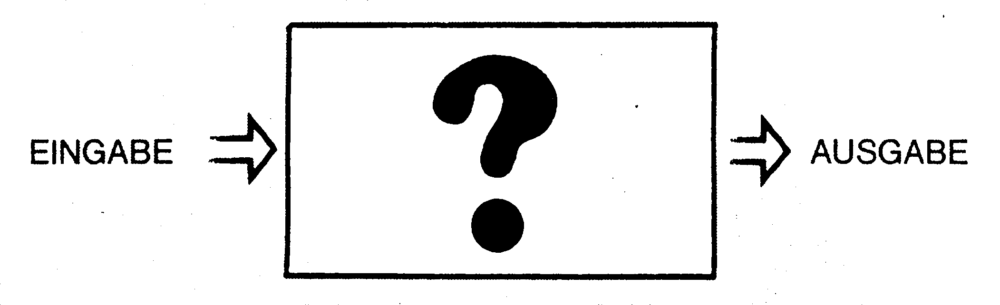
Jeder hat dieses Black-Box-Schema bestimmt schon einmal in irgendeinem Schullehrbuch gesehen. Die Begriffe »Eingabe« und »Ausgabe« sind sehr allgemein zu verstehen. Eine Eingabe kann zum Beispiel eine Zahl, ein Satz oder gar eine ganze Tabelle sein, die zur Bearbeitung eingegeben wird. Was passiert aber nun mit der Eingabe, und wie kommt es zu einer bestimmten Ausgabe? Hierfür steht die Black-Box, das ist der Kasten mit dem Fragezeichen. Am besten läßt sich diese Frage anhand von Bild 10 beantworten: Dieses Struktogramm ist typisch für ein Programm, das menschliches Verhalten simulieren soll.
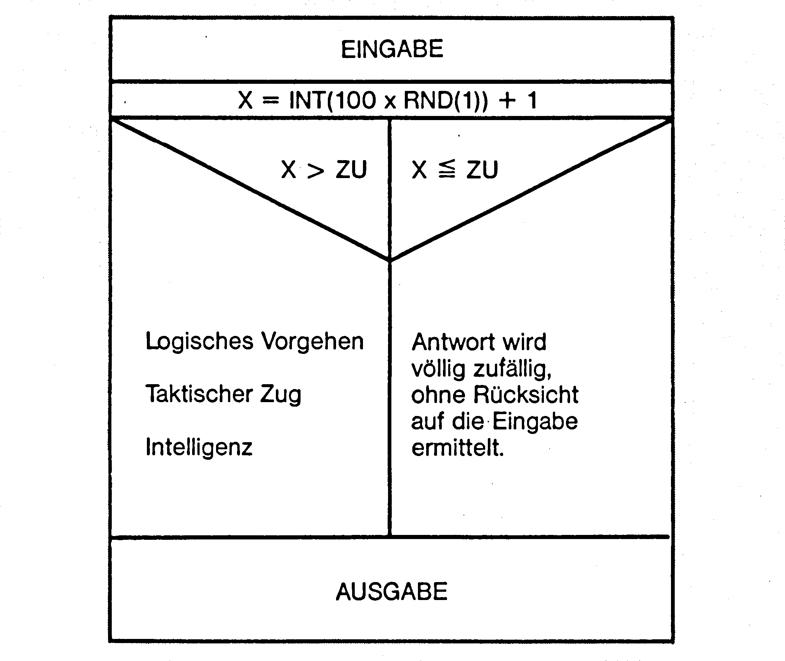
Auf den ersten Blick ist gleich festzustellen, daß es zur Bearbeitung einer Eingabe nur zwei Möglichkeiten gibt. Entweder geht das Programm logisch vor, das heißt, das Programm berechnet die Ausgabe, die als Antwort auf eine bestimmte Frage am logischsten zu sein scheint. Hier wird zum Beispiel der bestmögliche Zug bei einer Schachstellung berechnet. Oder das Programm geht unlogisch vor. Hier gibt das Programm eine Antwort vor, die unabhängig von der Eingabe berechnet wird.
Nehmen wir an, wir unterhalten uns mit einem Programm, zum Beispiel mit ELIZA, und dabei entsteht folgender Dialog:
Mensch: Ich habe Angst vor großen Hunden.
Computer: Finden Sie nicht auch, daß das Wetter heute besonders schlecht ist?
Unter die zweite Kategorie fallen jedoch nur solche Antworten, die wirklich absolut zufällig entstanden sind. Gibt nämlich ELIZA eine Verlegenheitsantwort, weil sie im Eingabesatz kein Schlüsselwort findet, so zählt dies als logisches Vorgehen! Am interessantesten in Bild 10 ist die Formel, mit der ermittelt wird, ob die Antwort auf eine Eingabe zufällig oder per Berechnung folgerichtig erfolgt.
Hierzu dient eine einfache RND-Funktion, mit der eine Zufallszahl erzeugt wird, die im Bereich zwischen 1 und 100 liegt:
X=INT(100*RND(1))+1
In der Variablen ZU wird angegeben, wie groß der Zufallsanteil in der »Black-Box« ist.
Nehmen wir einmal an, der Zufallsanteil beträgt 0 Prozent. Es soll also jede Eingabe logisch beantwortet werden
INT(100*RND(1))+1
ist aber immer größer als 0! So wird also immer die linke Spalte angewählt. Hat die Variable ZU hingegen den Wert 100 Prozent, so wird
INT(100*RND(1))+1
immer kleiner als 100 – die Antwort wird immer zufälliger ermittelt. Mittels dieser Zufallsformel ist es also möglich, das Logik/Zufalls-Verhältnis genau festzulegen.
Das folgende Schülerprogramm (Listing 6) arbeitet nach diesem Prinzip. Es wird ein Schüler simuliert, der nach dem kleinen Einmaleins abgefragt wird. Der Computer stellt die Aufgaben automatisch – man muß nach jeder Antwort einfach eine Taste drücken. Zu Beginn des Programms läßt sich ein Wert für ZU, nämlich der Intelligenzgrad des Schülers, eingeben. Je kleiner der Intelligenzanteil (also je größer ZU ist), um so öfter gibt der Schüler eine falsche Antwort.
Probieren Sie nach Eingabe des Programmes einmal verschiedene ZU-Werte aus.
Es läßt sich mit diesem Programm jede Art von Schüler simulieren – vom Dummkopf bis zur Intelligenzbestie.
Für das Programmieren von Schüler-Simulationen lassen sich folgende Regeln festlegen:
1. Regel: Kein Mensch ist perfekt. Also darf auch eine Simulation niemals vom perfekten Menschen ausgehen. Es ist also falsch, bei der obigen Schülersimulation dem Zufall 0 Prozent Anteil zuzuordnen. Dann wäre der Schüler nämlich hundertprozentig irrtumsfrei. Lassen Sie deshalb auch zur Simulation einer Intelligenzbestie den Zufallsanteil mindestens 1 betragen!
2. Regel: Gehen wir nun noch mal davon aus, daß ein extrem intelligenter Schüler simuliert werden soll. Die erste Regel besagt ja, daß ZU hier mindestens 1 betragen soll. Dies hat zur Folge, daß der Schüler in 99 Prozent der Fälle eine richtige Antwort gibt. Tritt jedoch das eine Prozent ZU in Kraft, so kann es zu einer absolut idiotischen Antwort kommen, wie zum Beispiel 1 mal 1 = 78. Sehr gute Schüler können sich schon mal irren, jedoch nicht derartig extrem. Auch eine falsche Antwort soll bei einer Extrem-guter-Schüler-Simulation deshalb niemals den Eindruck von Dummheit, sondern vielmehr den Eindruck eines Irrtums, also einer versehentlich falschen Antwort erwecken. Man muß also für diesen 1-Prozent-Fall im Programm eine falsche Antwort vorsehen, die nur geringfügig vom richtigen Ergebnis abweicht. Man kann zum Beispiel die Zeile 2210 so abändern:
2210 C=A*B: C=C+ INT(6*RND(1))--3
Jetzt liegen auch falsche Antworten in der Nähe der richtigen.
3. Regel: ZU darf nicht konstant sein. Wird ein Schüler sehr lange abgefragt, so treten irgendwann Ermüdungserscheinungen auf – die Leistungsfähigkeit geht zurück, ZU nimmt zu.
Die drei Regeln sind äußerst simpel. Sie können bei bestimmten Grenzfällen auch kombiniert werden.
Noch viel anschaulicher wird die Bedeutung des programmierten Zufalls beim Pacman-Algorithmus:
Jeder kennt das Labyrinth in Bild 11, das Zuhaus von Pacman und seinen Gegnern, den vier Gespenstern. Pacman war das erste Videospiel, das von Pong und Space Invader Schema abwich. Die meisten von uns haben sie miterlebt, die Pacman-Welle, die zirka 1979 über die ganze Video-Spielwelt schwappte. In der Tat, Pacman war das erste Videospiel, dessen Programmierung »intelligente« Rechenalgorithmen erforderte. Im Gegensatz zur primitiven Links-rechts-Bewegung der Space Invader war es hier erforderlich, vier Gespenster (mehr oder weniger intelligent) durch ein Labyrinth laufen zu lassen; und das mit dem Ziel, den Pacman des Spielers zu fangen. Von kaum einem anderen Videospiel gab es soviele Programmversionen wie von Pacman: Pac man, Munchy, Puckman, MS. Pacman und Side Pacman, um nur einige von ihnen zu nennen. Viele haben bestimmt auch schon einmal versucht, eine eigene Pacman-Version (sei es auch nur in Basic) zu programmieren. Das ist gar nicht so leicht! Sind die Gespenster zu intelligent, so hat der Spieler kaum eine Chance. Sind sie aber dumm, dann gewinnt der Spieler problemlos, und das Spiel verliert seinen Reiz. Intelligenz (Logik, Berechnung) und Dummheit (Zufallsbewegung) der Gespenster müssen richtig miteinander abgestimmt sein, um einen Spielwitz zu schaffen.
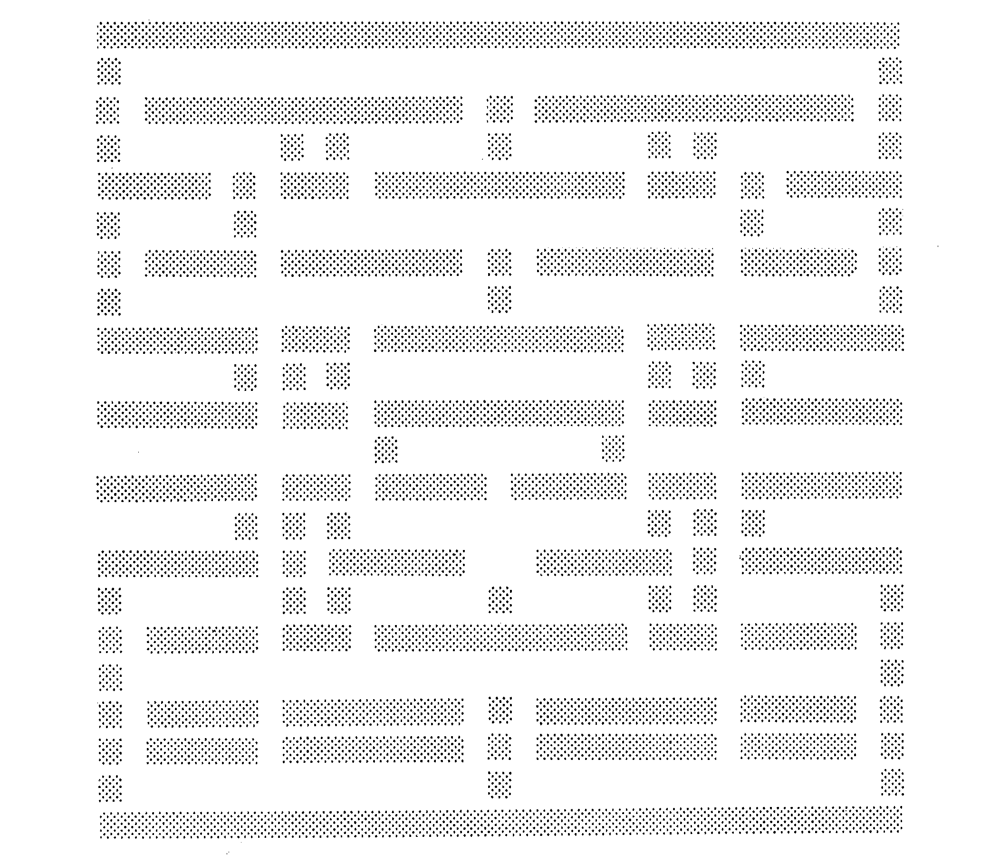
Das Logik-Zufalls-Verhältnis bleibt beim Pacman-Algorithmus übrigens auch bei steigendem Level konstant. Gelangt der Spieler in die nächste Spielrunde, so wird einfach die gesamte Ablaufgeschwindigkeit des Programmes gesteigert. Der Spieler muß dann schneller reagieren und hat weniger Zeit zum Nachdenken – er empfindet die neue Spielrunde schwerer als die zuvor bewältigte. Wie sieht der Algorithmus für ein solches Spiel aus? Lassen Sie uns zunächst davon ausgehen, daß das Gespenst absolut logisch vorgeht. Und das geht so: Das Gespenst bewegt sich zu Beginn des Spiels in einem beliebigen Gang des Labyrinths in eine beliebige Richtung. Es bewegt sich solange in diese Richtung, bis es an eine Abzweigung gelangt. Dann »überlegt« es sich, welche mögliche Richtung am ehesten zum Spieler führt. In dem Fall, der in Bild 12 vorliegt, würde sich das Gespenst für die Richtung SÜDEN (nach unten) entscheiden.
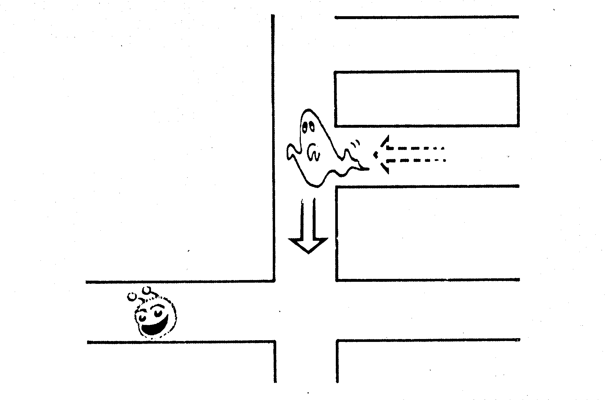
Verhalten sich alle Gespenster gemäß diesem Schema, so hätte der Spieler, wie bereits gesagt, keine Chance. Wir müssen also den Zufall ins Spiel bringen. Dieser Zufall sorgt dann dafür, daß sich ein Gespenst bei einer Wegrichtung nicht immer logisch verhält und den Weg in Richtung Spieler nimmt, sondern daß es ab und zu auch einen willkürlich gewählten Weg nimmt und diesen solange geht, bis es wieder an eine Kreuzung gelangt. Das folgende Programm in Listing 7 simuliert ein Pacman-Spiel mit einem Gespenst. Der Pacman wir mit einem Joystick in Port 2 gesteuert, die Variable ZU wird zu Beginn des Spiels eingegeben. In dem Spiel Pacman gibt es normalerweise vier Gespenster: Inky, Blinky, Winky und Dinky. In unserem Beispiel programmieren wir erst mal nur ein Gespenst, weil das Basic-Programm sonst viel zu langsam wird.
Probieren Sie bitte auch hier wieder verschiedene ZU-Werte aus. Sie werden schnell feststellen, daß es gar nicht einfach ist, den optimalen ZU-Wert zu finden. Trotzdem kann man auf den Zufallsfaktor in KI-Simulationen und Spielen nicht verzichten, wie es die beiden Beispiele gezeigt haben. Soweit ist ja wohl alles klar. Aber eine Anmerkung möchte ich zum Schluß noch machen: Bei ELIZA gibt es keinen Zufallsfaktor. ELIZA ist jedoch auch keine extrem gute Simulation. Ein Zufallsfaktor ließe sich in das Programm aber leicht einbauen und würde es mit Sicherheit noch verbessern.
(M. Nickles/bs/cg)